Page 1 / 原始页码 915
第48章 脊椎动物
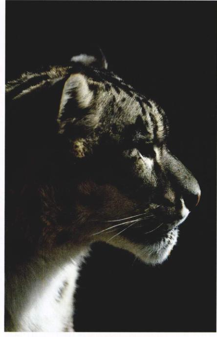
图 48.1 一种典型的脊椎动物 目前，哺乳动物，如雪豹 (Panthera uncia)，在陆生脊椎动物中占统治地位，但两亿年前，它们是爬行动物主宰的世界中的一个小类群。
脊索动物门 (Chordata) 动物（图 48.1）的内骨骼与棘皮动物相比有了很大的发展。如前一章所述，棘皮动物的内骨骼与节肢动物的外骨骼的功能类似，是一个包围身体的硬壳，肌肉附着在其内表面。脊椎动物的内骨骼则完全不同，是真正在内部的内骨骼。脊椎动物的特征是在胚胎的背面具有一条弹性的棒状结构（即脊索）。肌肉附着在这条脊棒上，使得早期的脊索动物可以让背部侧向摇摆，在水中游动。肌肉附着在内部骨架上是进化中关键的一步，从此开始了脊索动物向脊椎动物进化的路程，并且第一次发展成了真正的大型动物。
Page 2 / 原始页码 916
48.1 肌肉与内部骨架相连，大大提高了运动能力
48.1.1 脊索动物
脊索动物属于脊索动物门 (Chordata)，是有体腔的后口动物 (deuterostome coelomate)，在动物界中与另外一类唯一的后口动物——棘皮动物的关系最为密切。然而，与棘皮动物不同，脊索动物具有脊索，有关节的附肢，以及身体分节。脊索动物共有约 43 000 种，包括鸟类、爬行类、两栖类、鱼类和哺乳类。
脊索动物的四大特征在本门的进化过程中发挥了重要的作用（图 48.2）：
(1) 在动物体背面具有一条中空的神经索 (nerve cord)。脊椎动物的背神经索分化成为脑和脊髓。
(2) 弹性的脊索 (notochord)。在早期胚胎原肠 (primitive gut) 的背面形成，出现在所有脊索动物的某一发育阶段，脊索位于神经索的下方。有些脊索动物终生具有脊索，大多数脊椎动物的脊索在胚胎发育过程中被神经索周围的脊柱所取代。
(3) 咽鳃裂 (pharyngeal slit) 与咽相连，咽是一个肌肉质的管，连接了口腔和食管。陆生脊椎动物的咽鳃裂并不真正与外界相通，称其为咽囊 (pharyngeal pouch) 更为合适。咽囊出现在所有脊椎动物的胚胎中。在具有鳃的动物中，咽囊出现了与外界相通的裂口；而在没有鳃的动物中，鳃裂则消失。所有脊椎动物的胚胎都具有这种结构，证明了它们的祖先曾是水生生活的。
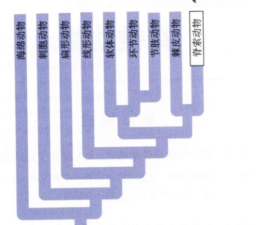
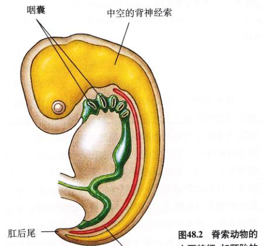
图 48.2 脊索动物的主要特征 如胚胎的模式图所示。
(4) 脊索动物具有肛后尾 (postanal tail)，至少在胚胎发育时，尾部延伸至肛门后方，而几乎所有其他动物的肛门都在末端。
所有的脊索动物在生活史的某个时期具有上述4个特征。例如，人类在胚胎期具有咽囊、背神经索和脊索。到了成年，神经索保留了下来，而脊索被脊柱取代，咽囊只保留下来一对，其他全部消失。保留下来的这对咽囊成为咽鼓管 (eustachian tube)，连接咽喉和中耳。
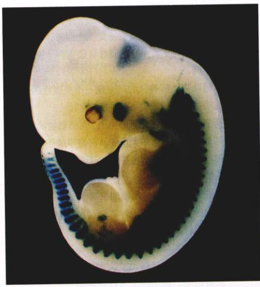
图 48.3 鼠的胚胎 在 11.5 天的发育过程中，中胚层已经分裂成片段，称为体节（照片里被染成深色），反映出所有脊索动物原本都是分节的。
Page 3 / 原始页码 917
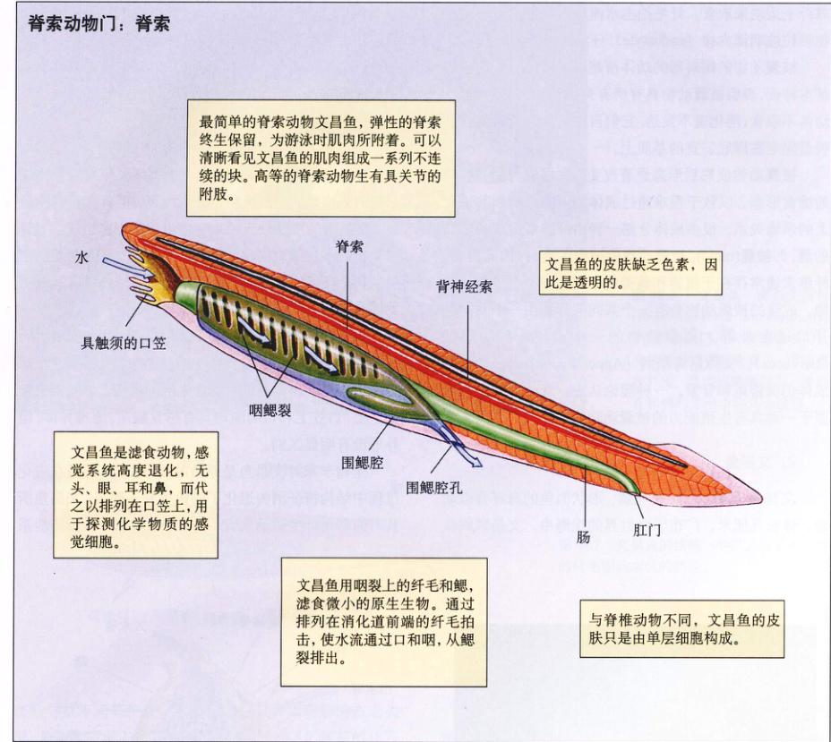
图 48.4 脊索的进化 脊椎动物、被囊动物和文昌鱼都是真正的脊索动物（脊索动物门）。脊索动物具有一条弹性棒状结构即脊索，为肌肉收缩提供阻力，并使快速的身体侧向移动成为可能。脊索动物还具有咽鳃裂（反映其水生祖先及部分动物现在的生境）和一条中空的背神经索。脊椎动物在胚胎发育过程中，脊索被脊柱取代。
脊索动物还有很多不同于其他动物的基本特征。脊索动物的肌肉是分节排列的，这影响到脊索动物身体的基本组织形成，在动物的胚胎中可以清晰地看到（图 48.3）。大多数脊索动物具有内骨骼，肌肉可附着其上。内骨骼或脊索使得脊索动物具有非凡的运动能力，并成为这类生物的典型特征（图 48.4）。
48.2 无脊椎的脊索动物具有脊索，但没有脊椎
48.2.1 无脊椎的脊索动物
1) 被囊动物
被囊动物 (Tunicate) 属尾索动物亚门 (Urochordata)，包括大约 1250 种海洋动物。绝大多数成体营固着生活（图 48.5），只有幼体具有脊索和神经索。成体既不长出一个主要的体腔，也无分节的标志。大多数种类生活在浅水里，也有一些生活在深水中。有些被囊动物的成体是群居的，聚集在海底。它们的咽部排列着大量的纤毛，靠纤毛运动来取食。纤毛拍击水流进入咽部，微小的食物颗粒被咽内柱 (endostyle) 分泌的黏液层所捕获。
被囊动物的蝌蚪形的幼体清楚地显示出脊索动物的基本特征，表明被囊动物具有所有脊索动物的共同特征。幼体不取食，消化道不发达，它们自由游泳几天后就借助吸盘固定在海底适宜的基质上。
被囊动物成熟后形态显著改变，发展成为固着生活的滤食形态，以致于很难通过成体的形态来辨别其进化上的亲缘关系。很多成体分泌一种由纤维素组成的坚韧的囊，即被囊 (tunic)。被囊动物由被囊包裹，并因此得名。纤维素通常存在于植物和藻类的细胞壁中，很少见于动物。成簇的被囊动物会有一个共同的囊，由一个共同的开口通向外部。尾索动物的一个类群——幼形纲 (Larvacea)，又称尾海鞘纲 (Appendiculariae)，动物的成体仍保留尾和脊索。一种理论认为，脊椎动物可能起源于一种具有生殖能力的被囊动物的幼体。
2) 文昌鱼
文昌鱼 (Lancelet) 是无鳞、形状似鱼的海洋脊索动物，体长几厘米，广布于全世界的浅海中。文昌鱼属头索动物亚门 (Cephalochordata)，其英文名源于一种双刃的外科手术小刀 (lancet)。该亚门大约有 23 个种，大多数属于文昌鱼属 (Branchiostoma)，以前曾被普遍称为两尖属 (Amphioxus)。文昌鱼的脊索纵贯背神经索的全长，并终生保留。
Page 4 / 原始页码 918
文昌鱼大部分时间都把身体半埋于泥沙中，仅前端露出沙外（图 48.6），它们偶尔也游动。很容易看见排成一列的肌肉块。文昌鱼和鱼外形相似，但具有更多的鳃裂。文昌鱼的皮肤缺乏色素，仅由单层细胞组成，与脊椎动物的多层细胞的皮肤不同。文昌鱼的身体两端都是尖的，没有可分辨的头，除了光线感受器外没有其他感觉器官。
文昌鱼依靠排列在口笠 (oral hood)、咽和鳃裂上的纤毛拍击产生水流来取食微小的浮游生物（图 48.7）。鳃裂为水流提供出口，是对滤食生活的适应。口笠突出于口之上，口笠上和口周围均具有感觉触须。雌雄异体，但外形没有明显区别。
生物学家对文昌鱼是原始的简单类型，还是在进化过程中结构特征消失退化了的鱼类并不确定。文昌鱼具有的利用纤毛运动取食，具有单层皮肤，以及排泄系统等特征，都暗示了它是脊索动物的古老类群。最近发现的与现存文昌鱼很相似的 5.5 亿年前的化石（远早于鱼类的出现）也证明了这个类群的古老。最近，分子分类学者的研究工作进一步支持了文昌鱼是脊椎动物最近的祖先的假说。
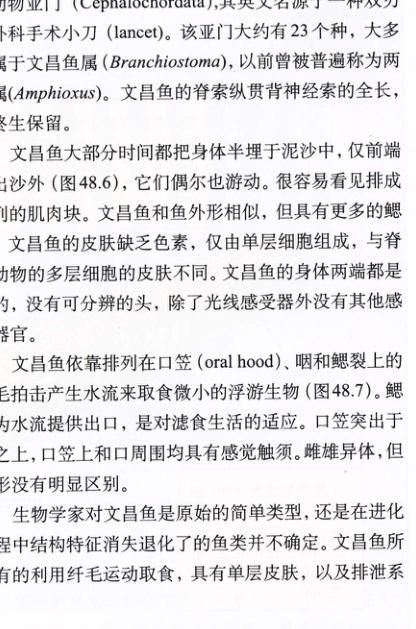
图 48.5 被囊动物（脊索动物门，尾索动物亚门） (a) 海鞘 (Halocynthia auranthium)。(b) 成熟的被囊动物结构图示。(c) 被囊动物幼体的结构图示，显示了蝌蚪的形体特征。被囊动物幼体与假想的脊索动物的共同祖先相似。
Page 5 / 原始页码 919
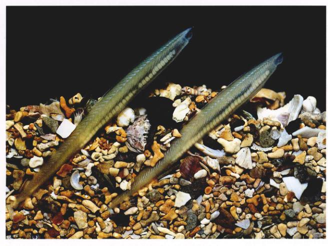
图 48.6 文昌鱼 两条文昌鱼 (Branchiostoma lanceolatum)，（脊索动物门，头索动物亚门），身体部分埋在贝壳砾中，前端露出在外面。肌肉段清晰可见，排列在体侧的方形小块儿为性腺。

图 48.7 文昌鱼的结构 本图显示了文昌鱼的纤毛驱动水流的路径。
48.3 脊椎动物具有内部骨架
48.3.1 脊椎动物的特征
脊椎动物 (vertebrate) 属脊椎动物亚门 (Vertebrata)，是具有脊柱的脊索动物。脊椎动物就是因为具有脊椎 (vertebrae) 而得名，脊椎是构成脊柱的独立的骨化小块。脊椎动物有别于被囊动物和文昌鱼的两个重要特征是：
(1) 脊柱 (vertebral column)：脊椎动物的脊索在胚胎发育过程中被骨化的脊柱所取代。脊柱是一系列的骨头，像是管子一样包围并保护着背神经索（图 48.8）。
(2) 头 (head)：除早期鱼类外，所有的脊椎动物都具有一个明显并且高度特化的头部，包括头骨和脑。因此有时脊椎动物被称作有头脊索动物 (craniate chordate)（希腊语 kranion，“头骨”）。
除了这两个重要特征外，脊椎动物与其他脊索动物的不同之处还表现在以下方面：
(1) 神经嵴 (neural crest)：神经嵴是一群独特的胚胎细胞，可发育成为脊椎动物的许多结构。当神经板 (neural plate) 凹陷、收缩形成神经管时，神经嵴细胞在神经管的背面形成（内容详见第 60 章）。随后神经嵴细胞迁移到发育中的胚胎的不同部位，并参与了很多结构的形成。
(2) 内脏器官 (internal organ)：在脊椎动物的内脏器官中，肝脏、肾脏和内分泌腺是这个类群特有的。无管内分泌腺分泌激素，帮助调节机体的多种功能。所有脊椎动物具有一个心脏和一个闭管式循环系统。脊椎动物的循环和排泄功能完全不同于其他动物。
Page 6 / 原始页码 920
(3) 内骨骼 (endoskeleton)：大多数脊椎动物的内骨骼由软骨 (cartilage) 或硬骨 (bone) 构成。软骨和硬骨是特化的组织，包含密集的胶原蛋白 (collagen) 和纤维。硬骨还包含磷酸钙结晶体。硬骨形成经历两个阶段：首先，胶原蛋白在纤维基质中沿着受力方向沉积，使其具有弹性；随后钙质渗透进纤维，加强其硬度。硬骨优于几乎所有生物的强度高、易破碎。脊椎动物的内骨骼使其能向大型化发展，并具有很强的运动能力。
脊椎动物进化概况
大约 4.7 亿年前，最早的脊椎动物在海洋中出现，它们是一类具有单一尾鳍的无颌鱼。其中很多看起来很像扁平的蝌蚪，一端有个孔，另一端有个鳍。绞合的颌的出现是一个巨大的进步，增加了选择新食物的能力，并使有颌鱼成为主宰海洋的生物。其后裔两栖动物登陆，类似蝶螈的两栖动物和其他一些已灭绝的大型两栖动物是最先成功登陆的动物。随后，大约 3 亿年前，两栖动物中最先成功进化出了爬行动物。
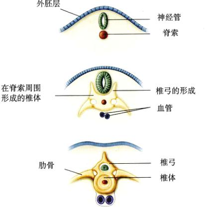
图 48.8 椎骨的胚胎发育 在动物发育的进化过程中，弹性的脊索被软骨质或骨质的椎体所覆盖，甚至取代。神经管被椎体上方的椎弓保护，椎体还可能有一脉弓，保护椎体腹面的大血管。脊柱是一条坚固的、有弹性的棒，在动物游泳或运动时能够给肌肉以支持。
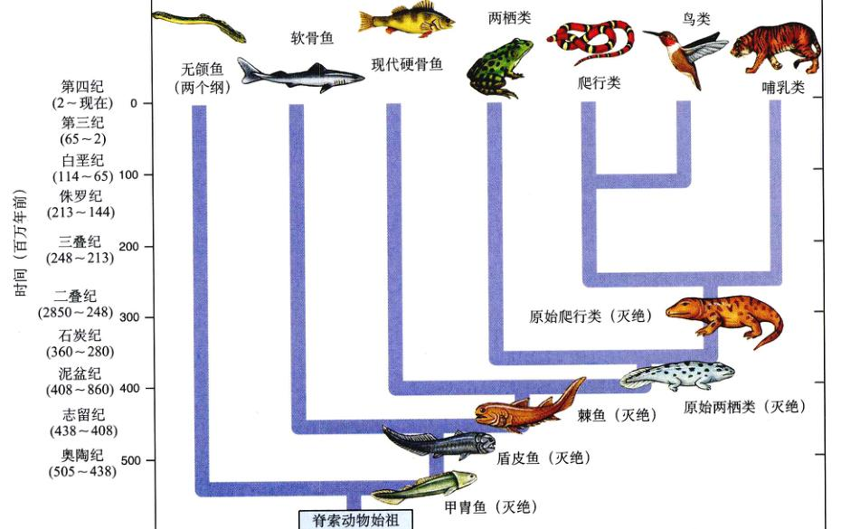
图 48.9 脊椎动物的家谱 无颌类包括两个纲，原始的两栖动物起源于鱼类。原始爬行动物起源于两栖类，进而发展成哺乳类和鸟类，鸟类由恐龙演化而来。
Page 7 / 原始页码 921
中产生了最初的爬行动物。5000 万年后，由于爬行动物更好地适应了陆地的生活，所以取代了两栖动物成为了主宰陆地的脊椎动物。
随着爬行动物的成功出现，脊椎动物真正主宰了地球。许多爬行动物也随之产生，还有会飞的种类，甚至有会游泳的种类。从而进化出两支保留至今的重要陆生脊椎动物：鸟类（恐龙的后代）和哺乳动物。从化石记录可知，恐龙和哺乳动物大约在 2.2 亿年前同时产生。在 1.5 亿年的时间里，恐龙统治了地球表面。在这样长的时间里 (100 多万个世纪)，最大的哺乳动物不过像猫一样大。随后，大约 6500 万年前，恐龙突然消失，其原因至今仍处子激烈的争论之中。它们消失后，哺乳动物和鸟类迅速取代了它们的地位，数量及种类大大丰富。
脊椎动物的进化史包括一系列的进化发展过程，使得脊椎动物占领了海洋并侵入陆地。在本章中，我们将讨论有哪些关键的进化过程使脊椎动物成功地占领了陆地。就像你将要看见的，这是一个令人惊异的进化成就，其中包含许多身体体制的根本性改变。
脊椎动物是一个种类繁多的类群，包括了水生、陆生和空中飞翔的成员。现存的脊椎动物隶属于 8 个纲（图 48.9），其中 4 个是生活在水中的鱼类，另外 4 个是陆栖的四足动物 (tetrapod)。现存的鱼类分为无颌总纲 (Agnatha)，包括盲鳗纲 (Myxini) 的盲鳗和头甲形纲 (Cephalaspidomorphi) 的七鳃鳗；软骨鱼纲 (Chondrichthyes)，如鲨；硬骨鱼纲 (Osteichthyes)。现存的大多数鱼类都属于硬骨鱼纲。四足类的 4 个纲为：两栖纲、爬行纲、鸟纲和哺乳纲。
48.4 脊椎动物在进化过程中侵入了海洋、陆地和天空
48.4.1 鱼类
鱼类占脊椎动物的一半以上，是种类最多、最成功的脊椎动物类群（图 48.10），它们提供了两栖动物侵入陆地的进化基础。从很多方面来看，最早的陆生脊椎动物——两栖动物，可以视作鱼类脱离水过的过渡类型。
表 48.1 鱼类的主要纲
| 纲 |
典型代表 |
图像 |
主要特征 |
现存种类数 |
| 盾皮鱼纲 |
盾皮鱼 |
(Image Placeholder) |
头部具重甲的有颌鱼，常为大型种类 |
灭绝 |
| 棘鱼纲 |
棘鱼 |
(Image Placeholder) |
有颌鱼类；现已全部灭绝；偶鳍由尖锐的棘支撑 |
灭绝 |
| 硬骨鱼纲 |
辐鳍鱼 |
(Image Placeholder) |
脊椎动物中最多样化的类群；具有鱼鳔和骨骼；偶鳍由骨质鳍条支撑 |
20 000 |
|
肉鳍鱼 |
(Image Placeholder) |
绝大多数已灭绝的硬骨鱼类群；两栖动物的祖先；成对的肉鳍 |
7 |
| 软骨鱼纲 |
鲨、鳐 |
(Image Placeholder) |
流线型的猎食者；软骨；无鳔；体内受精 |
850 |
| 盲鳗纲 |
盲鳗 |
(Image Placeholder) |
无颌鱼，无成对的附肢；腐食动物，多数无眼，但具有高度发达的嗅觉 |
43 |
| 头甲形纲 |
七鳃鳗 |
(Image Placeholder) |
绝大多数已灭绝，无颌鱼，无成对的附肢；寄生或非寄生种类，全部淡水繁殖 |
17 |
Page 8 / 原始页码 922
际上，鱼类和两栖类虽然有很多明显的区别，但仍然具有不少共同特征。首先，让我们看看这些鱼（表 48.1）。
脊椎动物起源于寒武纪 (Cambrian period, 5.70 亿 ~ 5.05 亿年前) 的古代海洋中，是第一次出现了脊椎的动物（图 48.11）。这些最初的鱼无颌、无牙，在水中蠕动，像小型的吸尘器一样从海底吸取微小的食物颗粒。绝大多数不足 30 cm，用鳃呼吸，没有偶鳍 (paired fin)，靠原始尾鳍推动其在水中游动。在奥陶纪 (5.05 亿 ~ 4.38 亿年前) 的 5000 万年里，这些简单的鱼类是惟一的脊椎动物。这一时期结束时，鱼类具有了原始的鳍（以助游泳），并有了强有力的骨质护甲。有颌鱼首先在志留纪 (4.38 亿 ~ 4.08 亿年前) 出现，并同时产生了一种新的取食方式。随后，软骨鱼和硬骨鱼出现了。
鱼类的特征
鱼的大小、形状、颜色和外形变化很大，从 18 m 长的鲸鲨到不超过你手指长的小型丽鱼 (cichlid)。有的生活在冰冷的北冰洋中，有的生活在温暖的淡水湖中，还有的能长时间完全离开水而生活。尽管有很多不同，但所有鱼类都具有一些重要的共同特征。
(1) 鳃：鱼类是水生生物，必须从周围的水中得到溶解的氧。水流从鱼口进入再经过鳃。鳃由富含血管的细丝组成，位于咽之后，由软骨弓支撑。血液在鳃中流动方向与水流方向相反，以最大限度地增加氧气的吸收率。
(2) 脊柱：所有鱼都具有内骨骼，脊柱包围背神经索，虽然它不一定由硬骨组成。脑完全被保护性的外壳包住，即由硬骨或软骨组成的头骨 (skull) 或颅骨 (cranium) 包住。
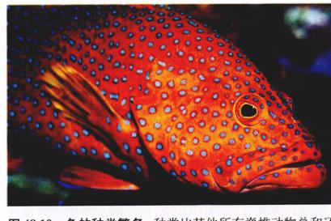
图 48.10 鱼的种类繁多 种类比其他所有脊椎动物总和还要多。
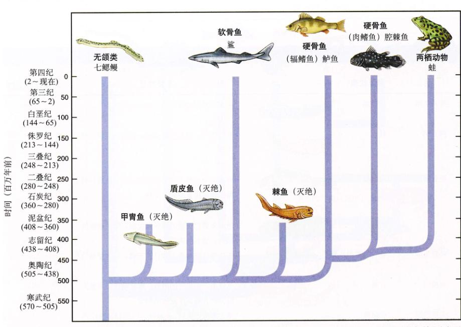
图 48.11 鱼类的进化 各个类群的鱼类之间，以及鱼和两栖动物之间进化的亲缘关系如图所示。早期海洋中繁盛的棘鱼和盾皮鱼现已灭绝。
Page 9 / 原始页码 923
(3) 单循环的血液循环：血液由心胜泵入鳃。富含氧的血液从鳃流到身体其他部位，然后返回心脏。心脏是一个肌肉质的管泵，具有两个依次收缩的小室。
(4) 营养缺陷：鱼类不能合成芳香族氨基酸，必须从食物中获得。这种功能缺陷被所有脊椎动物的后代所继承。
48.4.2 鱼类的进化史
1) 早期的鱼类
早期的鱼类是甲胃鱼 (Ostracoderm)，有五个目。只有其头盾 (head-shield) 是硬骨质的，而精细的内骨骼都是软骨质的。很多甲胃鱼都是底栖生物，在扁平的头下方有一个无颌的口，眼位于头的上面。甲胃鱼繁盛于奥陶纪和随后的志留纪 (4.38 亿 ~ 4.08 亿年前)，到了泥盆纪 (4.08 亿 ~ 3.60 亿年前) 结束时才完全灭绝。其中的一群——无颌类 (Agnatha) 的盲鳗和寄生性的七鳃鳗存活至今 (图 48.12)。
4.1 亿年前，即志留纪后期，发生了一个根本性的重要进化过程——颌的产生。颌由一系列的软骨弓的最前端进化而来，这些软骨弓的作用是加固鳃裂之间的组织，保持鳃裂张开 (图 48.13)。这个改变起初可能并不彻底。每个鳃弓由一组软骨（后来变为硬骨）组成，侧面观呈 V 字形排列。设想最前端的一对鳃弓的上下咬合起来，就成为原始的脊椎动物的颌。颌的上半部分除后端以外，不与头骨直接相连。牙齿在颌上产生，由排列在嘴边的特化的鳞片进化而来。
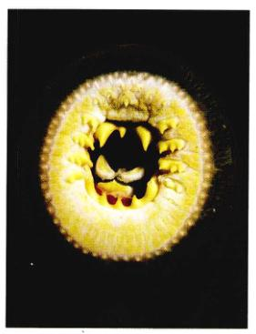
图 48.12 七鳃鳗特化的口 七鳃鳗用吸盘一样的口将自己吸附在被捕食的鱼身上，用牙齿钻一个孔，从中吸食血液。
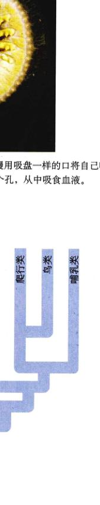
图 48.13 颌的进化 颌由古代无颌鱼的前端的鳃弓进化而来。
Page 10 / 原始页码 924
盾皮鱼 (placoderm) 和 棘鱼 (acanthodian) 都具有颌。棘鱼在泥盆纪早期相当普遍，很大程度上取代了甲胃鱼，但在二叠纪结束时就灭绝了。像甲胃鱼一样，棘鱼具有软骨质的内骨骼，但它们的鳞片包含小片的硬骨，预示着硬骨在未来的脊椎动物中将扮演重要的角色。棘鱼是捕食动物，远比甲胃鱼游得快，具有七个鳍来辅助其游泳。所有的鳍除了尾鳍的棘 (spine) 加固，棘鱼因因此而得名。目前，棘鱼已灭绝。
在泥盆纪的中期，身被重甲的盾皮鱼很常见。这是一个种类繁多而且进化成功的类群，盾皮鱼的七个目主宰了泥盆纪后期的海洋，但在泥盆纪结束时它们便灭绝了。盾皮鱼前端的甲板比后端末重。盾皮鱼的颌比棘鱼原始的颌发达得多，上颌与骨结合，头骨与肩部咬合。许多盾皮鱼体型巨大，有些体长超过 9 m，头骨的长度就达 0.6 m。
2) 活跃的游泳者的兴起
泥盆纪结束时，基本上所有早期的脊椎动物都灭绝了，取而代之的是鲨和硬骨鱼。鲨和硬骨鱼首先出现在 4 亿年前的泥盆纪早期。这类鱼类的颌进一步发育，其颌后的第一个鳃弓转变为支撑或支架，连接下颌的后端和头骨的后端。这使得口能张得很大，呈近圆形。大白鲨张开的口是一个有力的武器。
鲨和硬骨鱼之所以能够取代原始鱼类，是因为它们具有适于游泳的优良配置。典型的鲨和硬骨鱼的体型是流线型的。鱼头像楔子一样劈开水，身体向后逐渐变细，使鱼在水中游动时能够把湍流减到最小程度。
另外，鲨和硬骨鱼都具有一系列运动结构，极大地辅助了游泳。有三类鳍：①推动作用的鳍：大而有效的尾鳍 (caudal fin) 侧向摆动，驱动鱼在水中前进。②起稳定作用的鳍：一个（有时两个）背鳍 (dorsal fin) 作为稳定器，防止鱼在游泳时翻滚，而臀鳍 (ventral fin) 像龙骨一样防止侧向滑动。③在肩部和臀部有偶鳍（“四个角各一个鳍”），包括一对胸鳍 (pectoral fin) 和一对腹鳍 (pelvic fin)。这些鳍像飞机的升降舵一样，使鱼能够在水中上下移动，像舵一样使其向左右转弯，像车闸一样使其能够迅速停下来。
3) 鲨成为顶极捕食者
在泥盆纪之后的石炭纪 (3.60 亿 ~ 2.80 亿年前)，鲨类成为统治性的捕食者。像原始鱼类一样，软骨鱼纲的鲨鱼具有软骨质的骨骼，由于碳酸钙颗粒沉积在软骨的外层，骨骼被加固、“钙化”，变得轻且有强度。流线型的身体、偶鳍和轻而柔韧的骨骼，使鲨鱼成为优秀的游泳者（图 48.14）。鲨的胸鳍非常大，像机翼一样向两边张开，功能也如机翼，提供升力以补偿尾鳍产生的向下的推力。有些鲨鱼是很有侵略性的捕食者，体型很大。
鲨类是最早具有牙齿的脊椎动物之一。这些牙齿由皮肤上粗糙的鳞片演化而来，并不像人类的牙齿一样长在颌里，而是长在颌上。但这些牙齿不是牢固地锚定在颌上的，因而容易脱落。鲨鱼的口里有 20 排牙，前面的牙咬和切割食物，而生长在后面的牙以备替换。当一颗牙破损或被磨掉，下一排的牙便会向前移动进行替换。一条鲨鱼一生用掉 2 万多颗牙。这种程序化的掉牙的优点在于，正在使用的牙总是新而锐利的。鲨的皮肤上覆盖着细小的齿形鳞片，形成了粗糙的“砂纸”底纹。和牙一样，在鲨鱼一生中，这些鳞片也不断地被替换。
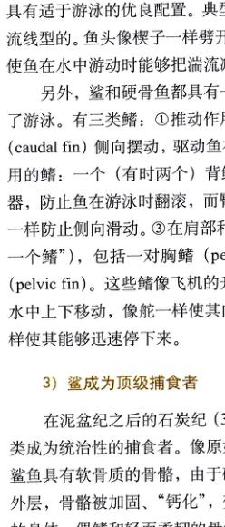
图 48.14 软骨鱼纲 软骨鱼纲的种类，如白真鲨，是主要的捕食动物或食腐动物，很多时间都在优美地运动。当它们移动时，产生一股水流通过鳃，借此从水中摄取氧气。
Page 11 / 原始页码 925
软骨鱼的繁殖是所有鱼类中最高级的。鲨鱼的卵在体内受精。交配之前，雄性用一对特化的鳍——鳍脚 (clasper) 抓住雌性。精液通过鳍脚中的槽流入雌性体内。尽管少数种类产的是受精卵，然而大多数种类的受精卵却是在雌性体内发育的，幼体出生后就能够活动。
鲨鱼早期的很多进化分支在二叠纪 (2.80 亿 ~ 2.48 亿年前) 结束时的大灭绝中消失了。幸存种类在中生代得以繁盛，并经历了一个多样性爆发过程，大多数现代的鲨鱼都是那时出现的。鳐类（底栖的扁平状鲨鱼）也是在那时出现的，大约比最早出现的鲨鱼迟了 2 亿年。鲨鱼成功地与当时的海洋爬行动物竞争，至今仍是海洋里主宰的捕食者。现在大约有 275 种鲨鱼，多于石炭纪有记录的种类。
4) 硬骨鱼在水中占优势
约 4 亿年前，硬骨鱼纲 (Osteichthyes) 的硬骨鱼 (图 48.15) 与鲨鱼同时产生，但走了一条完全不同的进化线路。硬骨鱼并不靠轻巧赢得速度，而是采用一副重的硬质的骨骼。内骨骼的骨骼非常坚固，为强壮的肌肉牵引提供了基础。在进化过程中，骨化 (ossification)（软骨被硬骨取代）过程突然发生。这个过程从鲨鱼开始，鲨鱼只在软骨外面有一薄层硬骨。硬骨鱼不仅内骨骼骨化，而且被包被身体的骨板和鳞也是骨化的。很多科学家认为，硬骨鱼是由同样在皮肤上具有骨板的棘鱼 (spiny shark) 进化而来。硬骨鱼是所有鱼类甚至所有脊椎动物中最成功的类群。硬骨鱼现存几十个目，有 2 万多种。
与鲨鱼不同，硬骨鱼是在淡水中进化形成的。最古老的硬骨鱼化石发现于泥盆纪中期的淡水湖河床中。早期的硬骨鱼很小，拥有成对的与喉后方相连的气囊。气囊充气使鱼在水中向上浮，排气时鱼在水中下沉。
多数硬骨鱼具有运动自如的、很薄的鳞片和完全对称的尾（使鱼游动时保持直线运动）。这是鱼类非常成功的体制。从鱼类的祖先演化出两大类群，肉鳍鱼 (lobe-finned fish) 和 辐鳍鱼 (ray-finned fish)，前者是最早的四足类的祖先，后者包括现在绝大多数的鱼类。
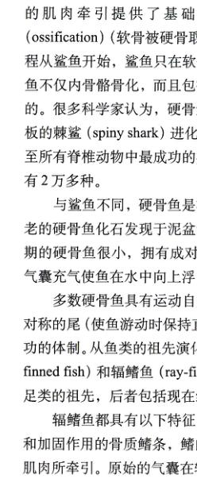
图 48.15 硬骨鱼 硬骨鱼的种类极多。这条斐济的半环刺盖鱼生活在热带海洋珊瑚礁周围，是许多惹人注目的鱼之一。
5) 硬骨鱼的重要适应
硬骨鱼能取得巨大成功，归功于一系列重要的适应性变化，这使得它们能够主宰水中生活。这些变化包括鳔 (swim bladder)、侧线系统 (lateral line system) 和 鳃盖 (gill cover)。
(1) 鳔：尽管硬骨比较骨骼重，硬骨鱼仍然能在水中浮起。这是因为它们具有鳔。鳔是充气的囊，鱼能够借此调节自身的浮力密度，很容易悬浮在任何深度 (图 48.16)。相反，如果鲨不水中游动便会下沉，因其身体的密度比水大。
Page 12 / 原始页码 926
原始硬骨鱼的鳔是位于喉后方的咽腹面的一个气囊，这些种类只是简单地把水面的空气吞入鳔中。绝大多数现代硬骨鱼的鳔是一个充满气体而脱离机体的独立的器官，内部主要是氮气和氧气。硬骨鱼是如何控制这个闭窍的呢？原来这些气体是从血液中释放出来的。气体通过鳔壁和靠鳔近的血管发生交换。许多生理因素控制着血液和鳔之间的气体交换。
(2) 侧线系统：虽然鲨鱼已经具有侧线的雏形，但硬骨鱼具有整套发达的侧线系统。侧线系统包括一系列感觉器官，这些感觉器官嵌入皮肤表面下面的管道内。这些管道纵贯鱼的全身，通过一系列凹陷与外界相通。流经鱼周围的水流进入这些管道。侧线系统的感觉器官由成簇的具有纤毛的细胞组成，埋在凝胶状的盖下。这些纤毛随水的轻微运动而摆动。与外界相通的凹陷具有定向性，不论水从哪个方向流动都会有一个凹陷能够受到刺激（见第 55 章）。鱼可以通过这些感觉器官发出的神经冲动感觉到侧线上力的压力波动情况，由此估计出它在水中移动的速率。这就是鲭鱼在逆流而上时定位的原因。
鱼类也可以借助侧线系统感触物体所反射的水流的流动变化，从而检测远处不动的物体。从某种意义上来说，这相当于毛的听觉。这种纤毛对压力波摆动的机制和人耳中发生的过程非常类似（见第 55 章）。
(3) 鳃盖：许多硬骨鱼有一块硬板，称作鳃盖 (operculum)，覆盖头两侧的鳃。硬骨鱼伸缩细肌时可将水泵出鳃。咽裂形成咽和鱼体外之间的通道，鳃悬浮在咽裂中。当鳃盖关闭时，将出口封闭。口张开时，鳃盖关闭增大了口腔的容积，以利于将水吸入口中。口闭上时，鳃盖张开减小了口腔的容积，追使水流通过鳃流出。利用这个高效的伸缩箱，硬骨鱼静止在水中可以使水流过鳃。鱼缸里的金鱼好像在吞咽，实际就是在做这件事。
6) 通向陆地的道路
肉鳍鱼类 (lobe-finned fish) (图 48.17) 出现于 3.9 亿年前，即硬骨鱼开始出现后不久。存活至今的只有 7 种，包括 1 种腔棘鱼 (coelacanth) 和 6 种肺鱼。肉鳍鱼类具有很长的肌肉质的偶鳍（这就是其名字的来源），由一组相互关节的中轴骨支撑。只有在偶鳍的末端才有骨质的鳍条。每个偶鳍中的肌肉可以彼此独立地移动，而辐鳍鱼类却不具有这样的本领。尽管肉鳍鱼现在已非常稀少，但在脊椎动物的进化历史中仍起着重要的作用。两栖动物是从肉鳍鱼进化而来的观点已基本确定。
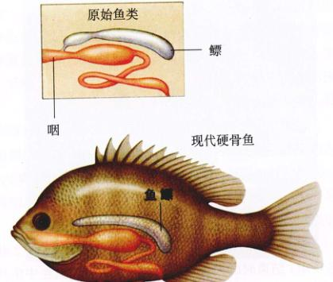
图 48.16 鳔的图解 鳔由咽部腹面的囊演化而来，硬骨鱼利用这种结构控制其在水中的浮力。
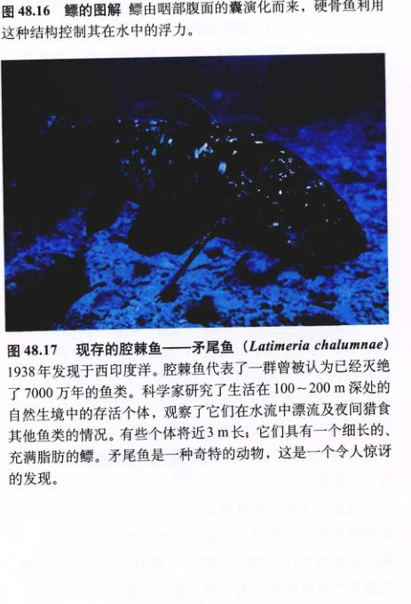
图 48.17 现存的腔棘鱼——矛尾鱼 (Latimeria chalumnae) 1938 年发现于西印度洋。腔棘鱼代表了一群曾被认为已经灭绝了 7000 万年的鱼类。科学家研究了生活在 100~200 m 深处的自然生境中的存活个体，观察了它们在水流中漂流及夜间猎食其他鱼类的情况。有一个细长的、充满脂肪的鳔。矛尾鱼是一种奇特的动物，这是一个令人惊讶的发现。
Page 13 / 原始页码 927
48.4.3 两栖动物
蛙、蝾螈、蚓螈等具有潮湿皮肤的脊椎动物是鱼类的直系后裔，它们是一个非常成功的类群——最先在陆地上行走的动物，是两栖动物中仅有的幸存者。现存的大多数两栖动物体型很小，因而绝大多数未被人类所注意。两栖动物是陆生动物中数量最少的一类，种类超过哺乳动物。两栖动物在整个地球的陆地食物链中发挥了重要的作用。
现存两栖动物的特征
生物学家将现存的两栖动物分为三个目（表 48.2）：无尾目 (Anura) 包括 22 个科 3680 种蛙和蟾蜍；有尾目 (Urodela 或 Caudata) 包括 9 科 369 种蝾螈 (newt)；无足目 (Apoda) 或裸蛇目 (Gymnophiona) 包括 6 科 168 种蚓螈，蚓螈形如蠕虫，生活在热带，几乎没有视觉功能。
两栖动物具有以下共同的重要特征：
(1) 足 (leg)：蛙类和蝾螈类具有四足，可以在陆地上快速运动。足是陆地生活的重要适应器官之一。蚓螈类在适应穴居生活的过程中丢失了足。
(2) 皮肤呼吸 (cutaneous respiration)：蛙类、蝾螈类和蚓螈类都用皮肤直接呼吸来补充肺摄氧的不足，这需要皮肤保持潮湿并提供足够大的表面积。对于那些表面积与体积的比值较高的动物而言，这种呼吸模式非常有效。
(3) 肺 (lung)：绝大多数两栖动物具有一对肺，尽管其内表面发育很不完善，而且表面积远比爬行动物和哺乳动物的小。两栖动物仍然靠下降口底吸入空气，上举口底使空气进入肺的办法来呼吸。
(4) 肺静脉 (pulmonary vein)：血液流经肺之后，由两条粗大的肺静脉将富含氧的血液送回心脏又再次泵出。这时，泵向组织的含氧血的压力比从肺流出时的压力要高得多。
(5) 部分分隔的心脏 (partially divided heart)：鱼类心脏的第一室在两栖动物已经消失，第二室和最后一室被横壁分开，以防止从肺部流回的含氧血和从身体其他部分流回心脏的缺氧血相混合。这将血液循环分为两个通路——肺循环 (pulmonary circulation) 和 体循环 (systemic circulation)。这种分隔是不完全的，第三室并没有分隔的壁。
所有现存两栖动物还具有其他几个特征：这三个目中所有的动物牙齿的基部和齿冠之间都有一个薄弱的区域；它们的视网膜 (retina) 上还具有一种独特的杆状感光细胞，称作“绿杆” (“green rod”)。这种结构的具体功能还不清楚。
表 48.2 两栖动物的主要目
| 目 |
典型代表 |
图像 |
主要特征 |
现存种类 |
| 无尾目 |
蛙、蟾蜍 |
(Image Placeholder) |
紧凑无尾的身体；较大的头部与躯干愈合；后肢特化适合跳跃 |
3 680 |
| 有尾目 |
蝾螈 |
(Image Placeholder) |
身体细长，长尾，附肢与身体成直角 |
369 |
| 无足目 |
蚓螈 |
(Image Placeholder) |
具有蛇形身体的热带种类；无附肢；小尾或无尾 |
168 |
Page 14 / 原始页码 928
48.4.4 两栖动物的进化史
两栖动物的名字很好地描述了现存两栖动物的基本特点，即它们有能力生活在两个环境中：它们祖先类生活的水世界和它们首先侵入的陆地世界。在这一部分，我们将重温这个类群复杂多变的历史。在近 2 亿年中，几乎所有两栖动物的成员都灭绝了。下一节中，我们将更详细地研究现存的几种两栖动物。
1) 两栖动物的起源
古生物学家认为，两栖动物肯定是由总鳍鱼进化而来的，尽管在一段时间里有一些关于其直系祖先是腔棘鱼、肺鱼或是已经灭绝了的骨鳞鱼 (即 Osteolepis，校者注) 的争论，每种观点都有一些证据支持。许多两栖类的内部解剖和腔棘鱼很相似。肺鱼和骨鳞鱼的口腔顶部的开口很像两栖动物的内鼻孔。另外，肺鱼有成对的肺，与两栖动物相似。最新 DNA 检测表明，相对腔棘鱼而言，肺鱼与两栖动物的关系要接近得多。很多古生物学家认为，两栖动物是由骨鳞鱼，而不是由肺鱼进化而来，因为早期两栖动物的头骨和附肢骨的类型和骨鳞鱼非常类似。它们也具有共同的牙齿结构。
脊椎动物成功登陆涉及很多重要的适应：
(1) 需要足来支撑体重，并完成运动 (图 48.18)。
(2) 需要肺从空气中摄取氧气。尽管空气中能获取的氧气比水中多得多，但鱼鳔的复杂结构需要水的浮力支撑，在空气中不能发挥功能。
(3) 心脏要重新设计，以便充分利用新的呼吸系统，并输送大量的氧气以供行走的需要。
(4) 只有进化出了能够防止卵干死的方法之后，生殖过程才能够脱离水。
(5) 最重要的是，需要进化产生一套能够防止自己身体干燥的系统。
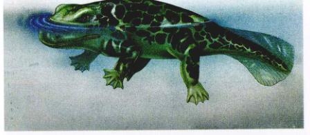
图 48.19 两栖动物是最早在陆地上行走的脊椎动物 鱼石螈 (Ichthyostega) 的复原图。鱼石螈是最早登陆的两栖动物之一，它具有适宜在陆地爬行的四肢，与延长的肋部相关的发达的嗅觉，还有结构先进的耳来收集空气传播的声音。尽管有这些特征，生活在 3.5 亿年前的鱼石螈在外形上还是很像鱼，代表了早期的两栖动物。
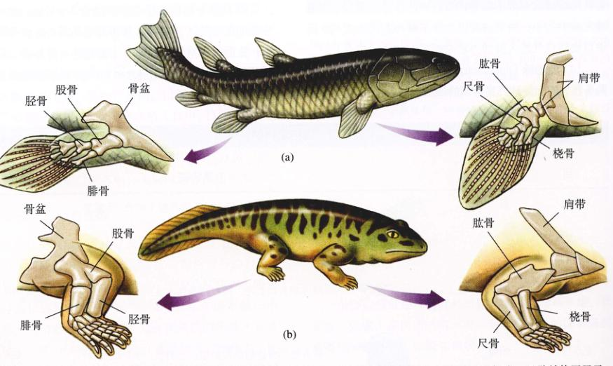
图 48.18 肉鳍鱼和原始两栖动物附肢骨的比较 (a) 肉鳍鱼，有些种类或许可以在陆地上移动。(b) 原始两栖类，骨骼结构图显示，这种动物的足比肉鳍鱼的鳍能更好地在陆地上移动。
Page 15 / 原始页码 929
2) 早期的两栖动物
两栖动物只部分解决了上述问题，但它们的解决方案已经足够使其延续 3.5 亿年。进化并不一定要完美的方案，只要能够运转就可以进行。
鱼石螈 (Ichthyostega) 是最早的两栖动物化石种类 (图 48.19)，发现于格陵兰地区 3.7 亿年前的岩石中。那时候，格陵兰是北美大陆的一部分，位置接近赤道。在以后的 1 亿年里，所有的两栖动物化石都出现在北美大陆。只有到了亚洲和南部大陆都与北美大陆相连成为泛大陆 (Pangaea) 之后，两栖动物才分布到了全世界。
鱼石螈是一种身体很强壮的动物，结实的四肢由腰带和肩带强有力地支撑着。肩带游离，不像鱼类那样附着在头骨上。腰带也不同于鱼类，由脊柱支撑着，这样附肢就可以支撑动物的体重。为了进一步加强稳固性，又长又宽的肋骨相互交叠形成了一个坚固的箱子，包围肺和心脏 (现代无尾两栖类的肋骨都已退化)。这个肋骨笼非常坚硬，以致不能通过扩张或收缩来呼吸。鱼石螈像蛙类一样摄取氧气，下降口腔底吸入空气，上举口底使空气通过气管进入肺。
3) 两栖动物的兴起和衰落
两栖动物最开始兴起于石炭纪 (3.60 亿 ~ 2.80 亿年前)。已知石炭纪早期的 14 科两栖动物几乎都是水生或半水生的，如鱼石螈。在晚石炭纪，北美很多地方覆盖着低海拔热带沼泽，34 科两栖动物繁盛于这种湿润的陆地环境，同时还有盘龙 (pelycosaurus) 和其他早期的爬行动物。在这之后的二叠纪早期 (2.80 亿 ~ 2.48 亿年前)，两栖动物发生了一个显著的变化——它们离开了沼泽进入干燥的高地。很多陆生两栖动物具有骨板和包被身体的被甲，体型大，有一些像小马一样大 (图 48.20)。它们庞大的体型和身体被完全覆盖说明了它们不像现今两栖动物用皮肤呼吸，而是用不通透的革质皮肤防止水分散失。到二叠纪中期时，已有 40 科两栖动物，其中只有 25% 的种类仍旧像鱼石螈一样半水生生活，60% 的两栖动物完全陆生，还有 15% 是半陆生。
二叠纪是两栖动物发展的顶峰。在二叠纪结束时，一种称作兽孔类 (therapsid) 的爬行动物开始兴盛起来，将两栖动物驱逐出了它们在陆地上新取得的生境。伴随着二叠纪结束时的大灭绝事件，兽孔类成为主要的陆生脊椎动物，绝大多数两栖动物仍是水生的。这个趋势持续到随后的三叠纪 (2.48 亿 ~ 2.13 亿年前)，这时两栖动物在陆地上真正灭绝了。
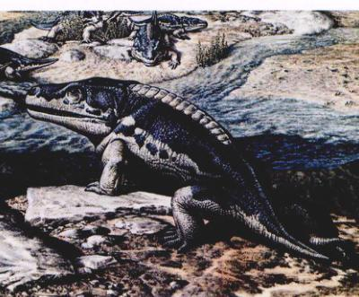
图 48.20 一种二叠纪的陆生两栖动物 巨头螈 (Cacops) 是一种体型庞大、全身被甲的已灭绝的两栖动物。
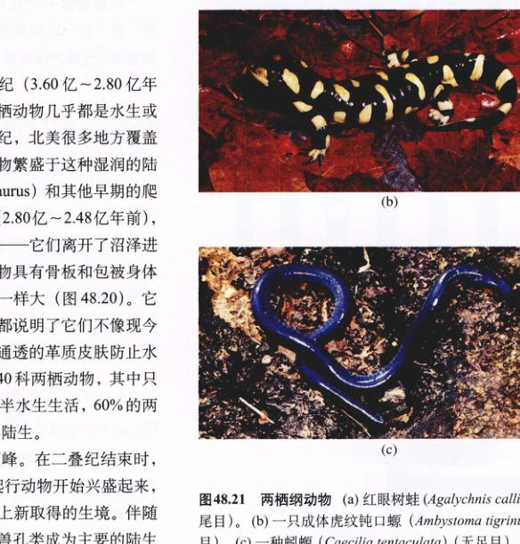
图 48.21 两栖纲动物 (a) 红眼树蛙 (Agalychnis callidryas)（无尾目）。(b) 一只成体虎纹钝口螈 (Ambystoma tigrinum)（有尾目）。(c) 一种蚓螈 (Caecilia tentaculata)（无足目）。
Page 16 / 原始页码 930
在三叠纪结束时，仅存活 15 科的两栖动物 (包括最早的蛙)，且几乎毫无例外地都是水生。有的体型很大，其中一种竟有 3 m 长。随后的侏罗纪 (2.13 亿 ~ 1.44 亿年前) 只有两类已知的两栖动物——无尾类 (蛙和蟾蜍) 和有尾类 (蝾螈和欧螈)。两栖动物的时代结束了。
4) 现存两栖动物的分类
现今所有的两栖动物都是恐龙时代幸存下来的两科两栖动物的后代。在第三纪 (6500 万 ~ 200 万年前)，这些湿皮肤的两栖动物成功地分布在全球的潮湿生境，现存有 37 个科，4200 多种。
(1) 无尾目 (Anura)：无尾的两栖动物，包括蛙和蟾蜍，生活在从沙漠、山地到池塘、水洼的各种各样的环境中 (图 48.21a)。蛙类具有光滑、潮湿的皮肤，宽阔的身体，以及长的后腿，这使得之为优秀的跳跃者。大多数蛙类栖息在水中或水边，还有一些热带种类生活在树上。与蛙不同，蟾蜍的皮肤干燥、粗糙，腿短，能够很好地适应干燥环境。所有的无尾目成体为肉食性动物，以无脊椎动物为食。
大多数蛙和蟾蜍返回到水中繁殖，将卵直接产在水中。这些卵缺乏不透水的外膜，所以离开水后会迅速干死。卵在体外受精，孵化出游泳的幼体称为蝌蚪 (tadpole)。蝌蚪生活在水中，一般以微小的藻类为食。经过一段时间的成长后，蝌蚪逐渐变为成体的蛙。体型的这种突然变化称作变态 (metamorphosis)。
(2) 有尾目 (Urodela 或 Caudata)：蝾螈具有长的身体、长的尾，以及潮湿的皮肤 (图 48.21b)。它们的体长一般在几英寸到一英尺不等，如大安螈 (Andrias) 长达 1.5 m，体重 33 kg。大多数蝾螈生活在潮湿的地方，如岩石或木头下，或热带植物的叶中。有一些蝾螈完全生活在水中。
蝾螈在水中或潮湿的地方产卵，一般行体外受精，少数采用体内受精，由雌性拾起雄性产下的精子囊。与无尾类不同，从卵中孵出的小蝾螈并不经历显著的变态，而是出生来就和成体类似。蝾螈也是肉食性动物。
(3) 无足目 (Apoda) 或裸蛇目 (Gymnophiona)：蚓螈是一类高度特化的热带穴居两栖动物 (图 48.21c)。无足，蠕虫形，平均长约 30 cm，最长的可达 1.3 m。眼极小，通常无视觉功能。它们和蠕虫很像，但具有牙和颌。它们以蠕虫和其他生活在土壤中的无脊椎动物为食。雄性蚓螈将精子直接传给雌性，雌性一般可产出自由活动的幼体。美国东部的泥鳗是有小前肢、没有后肢的两栖动物，并非无足类，而是高度特化的有尾类。
48.4.5 爬行动物
如果我们把两栖动物看作是一本有关陆地生活的书的草稿的话，那么爬行动物就是最终的成书了。面对陆地生活的五个关键性的挑战，爬行动物在两栖动物变革的基础上又进一步完善。足的排列能更有效地支撑体重，使得爬行动物的身体能够长得更大，并能奔跑。肺和心脏的功能也变得更有效。皮肤上覆盖了干燥的骨板或鳞片，以减少水分的散失，卵也包被了不透水的壳 (图 48.22)。爬行动物是最先出现的真正的陆生脊椎动物。
目前，地球上现存的爬行纲爬行动物有 7 000 多种 (表 48.3)。这是一个相当成功的类群，分布范围比哺乳类还要广泛，种类数大约是哺乳类的 1.5 倍。虽然传统观点认为爬行动物比哺乳类原始，但是现存的绝大多数爬行动物是由兽孔类（直接产生哺乳类的分支）之后的进化演化而来。
Page 17 / 原始页码 931
1) 爬行动物的主要特征
所有现存的爬行动物具有一些共同特征，这为它们取代两栖动物成为陆地上的优势脊椎动物起到了关键作用。最重要的特征如下所述：
(1) 羊膜卵 (amniotic egg)：两栖动物之所以没有成功地成为完全的陆生动物是因为卵必须产在水中以防止干燥。大多数爬行动物产的卵不透水，包含一个营养源——卵黄 (yolk) 和 4 层膜——卵黄囊、羊膜、尿囊和绒毛膜 (图 48.22)。每层膜都各司其职，使卵成为一个独立的生命支持系统。最外一层膜是绒毛膜 (chorion)，紧贴在多孔的壳下。它使得外界所需的气体能够透过，但保留卵内的水分。羊膜 (amnion) 把发育中的胚胎包裹在一个充满液体的腔里。卵黄囊 (yolk sac) 通过与胚胎消化道相连的血管将卵黄的营养物质提供给胚胎。胚胎产生的废物排泄到尿囊 (allantois) 里。所有现存的爬行动物 (也包括鸟类和哺乳类) 的卵中都具有这种相同的膜结构。这三个纲的动物被统称为羊膜动物 (amniote)。
(2) 干燥的皮肤：现存的两栖动物皮肤潮湿，必须生活在潮湿的地方以防止干燥。爬行动物的皮肤干燥而不透水。一层鳞或甲覆盖在皮肤上，防止水分散失。这些鳞片是由充满角蛋白的表皮细胞形成的，角蛋白就是形成爪、指甲、头发和鸟羽的物质。
(3) 胸式呼吸 (thoracic breathing)：两栖动物依靠压缩喉部把空气泵入肺进行呼吸，它们的呼吸能力受到口腔容积的限制。爬行动物发展了肺呼吸，靠扩张和收缩肋骨将空气吸入并排出肺。呼吸系统的能力只与肺的容量有关。
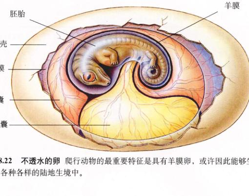
图 48.22 不透水的卵 爬行动物的最重要特征是具有羊膜卵，或许因此能够生活在各种各样的陆地生境中。
48.4.6 占统治地位的爬行动物的兴衰
在爬行动物统治地球的 2.5 亿年中，四大类型的爬行动物依次成为了占统治地位的类群：盘龙类、兽孔类、槽齿类和恐龙类。
1) 盘龙类：更好的捕食者
早期的爬行类，如盘龙类 (Pelycosaur) 比两栖动物更好地适应了陆地上干燥的生活，这是因为它们进化出了不透水的卵。由于头骨设计和肌肉排列的改进，它们具有强有力的颌。盘龙类属合颞孔类 (synapsid)，其颅骨两侧在眼眶的后方有一对颞孔 (temporal hole)。爬行动物分类的一个重要依据就是颞孔是否存在及其数目的多少 (图 48.27)。颌部的肌肉附生在这些颞孔里，以便能咬合得更有力。一只盘龙体重大约 200 kg。盘龙具有长而尖锐的“像切肉刀一样的”牙，这与其数目的庞大和死亡与其同样大小的动物的陆地脊椎动物 (图 48.23)。盘龙统治了 5 000 万年，占了陆地脊椎动物的 70%。约 2.5 亿年前，盘龙类灭绝，被其直系后裔——兽孔类所取代。
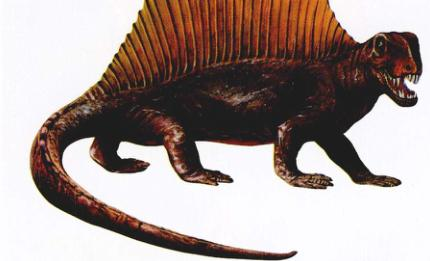
图 48.23 盘龙类 异齿龙 (Dimetrodon) 是一种肉食性盘龙，背面具有一个船帆状的隆起，可能是用来散发热热或晒太阳获得热量的。
Page 18 / 原始页码 932
表 48.3 爬行动物主要的目
| 目 |
典型代表 |
图像 |
关键特征 |
现存种类数 |
| 鸟臀目 |
剑龙 |
(Image Placeholder) |
具有 2 块向后延伸的腰带骨，与鸟类的腰带骨近似，草食，有些一样的上颌，足在身体下方。 |
灭绝 |
| 蜥臀目 |
霸王龙 |
(Image Placeholder) |
恐龙，1 块腰带骨向前，另 1 块腰带骨向后，像蜥蜴的骨盆，兼食植物和肉类；足在身体下方。 |
灭绝 |
| 翼龙目 |
翼龙 |
(Image Placeholder) |
飞行的爬行动物；翼由皮肤形成，在第 4 指和身体之间张开，早期种类翼展 60 cm，晚期种类将近 8 m。 |
灭绝 |
| 蛇颈龙目 |
蛇颈龙 |
(Image Placeholder) |
筒形的海洋爬行动物，具有利齿和浆形的鳍；有些种类有蛇形的脖子，可达体长的两倍。 |
灭绝 |
| 鱼龙目 |
鱼龙 |
(Image Placeholder) |
流线型的海洋爬行动物，身体与鲨和现代的鱼类很相似。 |
灭绝 |
| 有鳞目 蜥蜴亚目 |
蜥蜴 |
(Image Placeholder) |
蜥蜴，四肢与身体成直角，肛门侧面裂开；大多数陆生。 |
3 800 |
| 蛇亚目 |
蛇 |
(Image Placeholder) |
蛇，无足，靠滑行移动；多鳞的皮肤周期性蜕皮；大多数陆生。 |
3 000 |
| 龟鳖目 |
龟、陆龟、海龟 |
(Image Placeholder) |
古老的爬行动物，由骨板包被，脊椎、肋骨与骨板愈合；角状的喙无齿。 |
250 |
| 鳄目 |
鳄、短吻鳄、长吻鳄、凯门鳄 |
(Image Placeholder) |
高级的爬行动物，具有 4 室的心脏和槽生齿；肛门纵裂，与鸟类亲缘关系最近。 |
25 |
| 喙头蜥目 |
楔齿蜥 |
(Image Placeholder) |
曾经很繁盛的一类的幸存者，在恐龙出现之前绝大多数灭绝，有愈合的、楔形的、无齿槽的齿；前额的皮肤下有原始的第三只眼。 |
2 |
Page 19 / 原始页码 933
2) 兽孔类：加快了新陈代谢
兽孔类 (Therapsid) (图 48.24) 摄食的频率是它们祖先盘龙类的 10 倍。有证据表明它们是内温动物 (endotherm)，可以调节自身的体温。额外的食物消耗是身体产热所必需的。这使得在冷漫长的冬天里，兽孔类比其他的脊椎动物更为活跃。在 2000 万年中，兽孔类 (也被称为“似哺乳类的爬行动物”) 是最繁盛的陆地脊椎动物，直到 2.3 亿年前被冷血的或外温的 (ectothermic) 爬行动物的一支——槽齿类所取代。兽孔类在 1.7 亿年前灭绝，但那时它们的后裔——哺乳动物已经产生了。
3) 槽齿类：消耗更少的能量
槽齿类 (Thecodont) 属双颞窝类 (diapsid)，头骨具有 2 对颞孔，与两栖动物及早期爬行类一样，它们也是外温动物 (图 48.25)。2.3 亿年前，地球气候变暖，槽齿类普遍取代了兽孔类。在温暖的气候下，兽孔类的内温式不再具有竞争优势，而外温式的槽齿类只需要其十分之一的食物。槽齿类是最早的陆地上的两足类 (bipedal) 脊椎动物。它们在三叠纪主宰了地球，存活了 1500 万年，直到被它们的直系后裔——恐龙所取代。
4) 恐龙：学会直立奔跑
恐龙在 2.2 亿年前由槽齿类进化而来。与槽齿类不同的是，它们的腿是直接长在身体下方，这是身体结构上一个很重要的改进 (图 48.26)。这种改进使腿直接支持体重，恐龙便能够更快、更敏捷地奔跑。恐龙与槽齿类化石的区别在于前者的膝盖骨 (hip socket) 侧面有一个孔。这是因为恐龙的腿在膝盖之下，力的方向是向上的，而不是向内，所以在膝盖的侧面不需要骨。恐龙继续进化成为最成功的陆地脊椎动物，统治了世界 1.5 亿年。所有恐龙在 6500 万年前突然消失，显然是一次小行星撞击的结果。
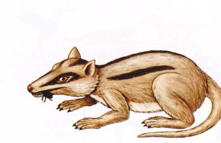
图 48.24 兽孔类 这只像黄鼠狼一样的长有尖牙的兽孔类——大带齿兽 (Megazostrodon)，也许具有毛皮。从三叠纪后期开始，它们和现代的哺乳动物很相似，一些古生物学家认为它们是最早的哺乳动物。
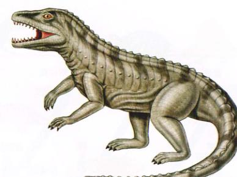
图 48.25 槽齿类 新巴土鳄 (Euparkeria) 是一种槽齿类动物，沿着脊椎有成列的骨板，就像看到的现代鳄和美洲鳄一样。
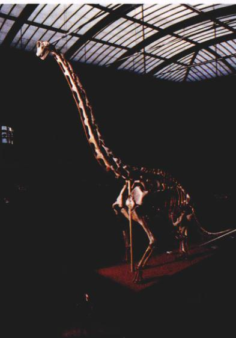
图 48.26 世界上最大的恐龙标本 这只 1.45 亿年前的腕龙 (Brachiosaurus) 生活在东非，是一只草食性的蜥脚类 (sauropod) 恐龙，有 20 多米长。
Page 20 / 原始页码 934
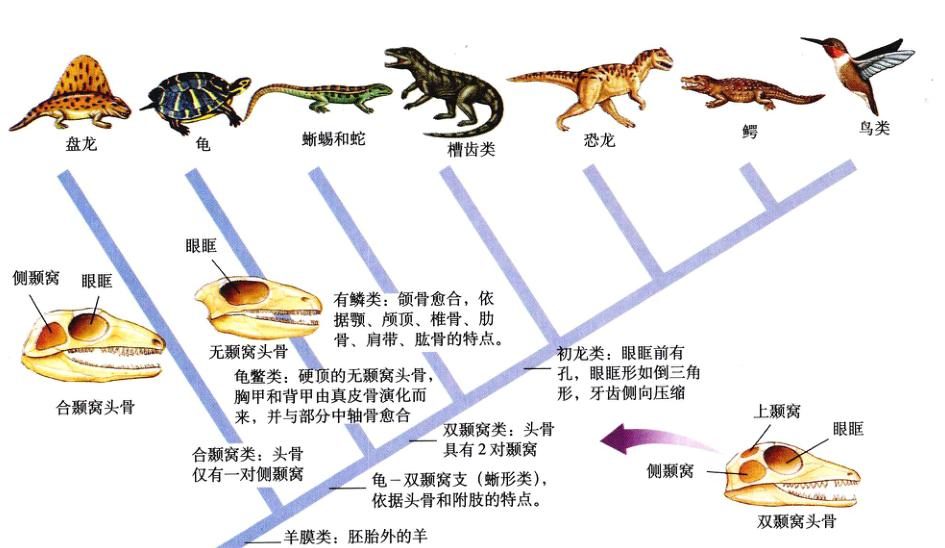
图 48.27 羊膜动物的进化树
(1) 无颞窝头骨：无颞窝类 (anapsid)，没有颞孔。包括龟鳖类。
(2) 合颞窝头骨：合颞窝类 (synapsid)，眼眶后仅有一对侧颞孔。包括盘龙类、兽孔类和哺乳类。
(3) 双颞窝头骨：双颞窝类 (diapsid)，具有 2 对颞孔。包括蜥蜴、蛇、鳄、恐龙和鸟类。
图 48.27 和图 48.28 总结了已经灭绝的和现存的爬行动物之间的亲缘关系。
5) 现存的爬行动物
爬行动物中大多数重要目的种类都已灭绝，曾经出现过的 16 个目中，只有 4 个目存活了下来。
(1) 龟鳖类 (turtle)：龟鳖类是现存爬行动物中最古老的一支。龟鳖类具有无颞孔型的头骨，与最早出现的爬行动物类似。龟鳖类在 2 亿年里几乎没有变化。
(2) 蜥蜴和蛇 (lizard and snake)：现存的绝大多数爬行动物属于这个目，即蜥蜴和蛇。蜥蜴和蛇是蜥蜴状的爬行动物的后裔，它们的出现先于槽齿类，在 2.5 亿年前的晚二叠纪从爬行动物的主干上进化而来 (图 48.28)。在恐龙统治的整个中生代时期，与哺乳动物一样，这些爬行动物为地球上的次要成分。恐龙消失后，蜥蜴和蛇类才得以发展。
(3) 楔齿蜥 (tuatara)：现存的第三支爬行动物——喙头类 (Rhynchocephalians)，是双颞孔类小型爬行动物，它们的出现稍早于恐龙。恐龙时期，喙头类一直存在，侏罗纪时已很常见。白垩纪开始衰退，虽然它们不具备与蜥蜴类竞争的能力，到恐龙消失时，喙头类已经非常罕见。现在，喙头目 (Rhynchocephalia) 中仅有两个幸存活种，都生活在新西兰附近的小岛上。
(4) 鳄类 (crocodile)：第四支现存的爬行动物——鳄类，进化上比其他现存的爬行动物晚得多。鳄类是槽齿类的后代，在很多方面与恐龙类似。在 2 亿年中，它们几乎没有变化。鳄类、翼龙类 (pterosaur)、槽齿类 (thecodont) 和恐龙共同构成了初龙类 (archosaur)（占统治地位的爬行动物）。
6) 其他重要的特征
从羊膜卵的结构就可以设想，爬行动物和其他羊膜动物不能像大多数两栖动物那样进行体外受精。精子除了穿过保护卵的膜屏障之外似乎别无他法。事实上，雄性是将精子送入雌性体内，与卵完成受精作用之后再形成膜。这种受精方式称为体内受精 (internal fertilization)。
爬行动物的循环系统比鱼类和两栖类先进，能更有效地为身体供氧 (图 48.29)。这个进步是通过扩展心脏内的隔膜而实现的。左、右心房被隔膜分开，心室部分被隔膜分开，这样减少了心室中缺氧血和含氧血的混合。与两栖动物相比，这种改变为机体组织提供含氧量更高的血液。鳄类的心脏分为 4 室，心室完全隔开，与鸟类和哺乳类的心脏一样 (恐龙很可能也一样)。
Page 21 / 原始页码 935
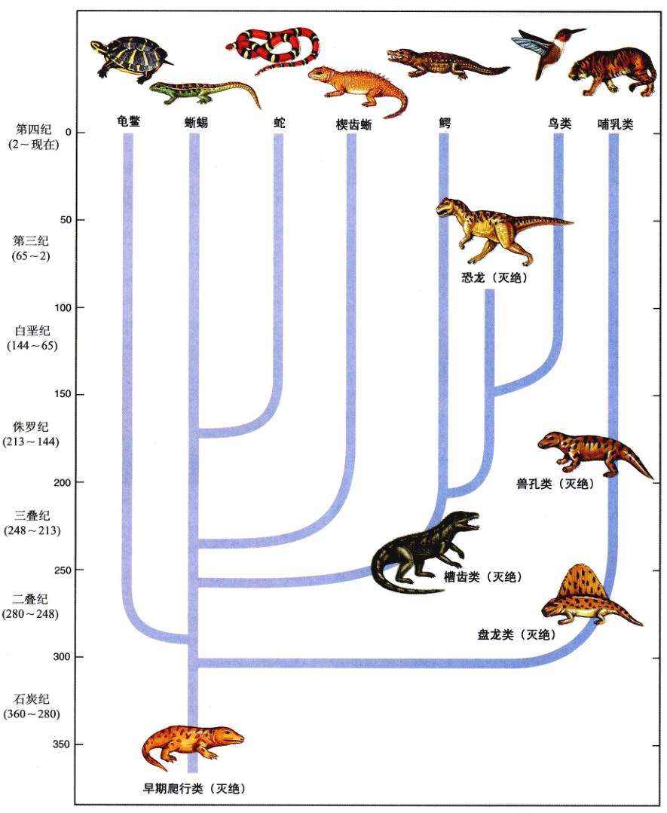
图 48.28 爬行动物的进化关系 现存的四类爬行动物：龟鳖类、蜥蜴和蛇类、楔齿蜥、鳄类。这棵系统发生树表明了这 4 个目之间的相互关系，以及它们和恐龙、鸟类和哺乳类的关系。
Page 22 / 原始页码 936
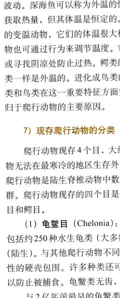
图 48.29 爬行动物与鱼类循环系统的比较 (a) 爬行动物。如龟，离开肺的血液从心室被重新泵出，到达身体其他部分时仍能保持较高的压力。(b) 鱼的血液出鳃后直接流向身体其他部位，所以循环速度慢。
所有现存的爬行动物均为外温 (ectothermic) 动物，从外界获取热量。相反，内温 (endothermic) 动物能够体内产生能量。另外，恒温 (homeothermic) 动物具有恒定的体温，变温 (poikilothermic) 动物体温随环境而波动。深海鱼可以称为外温的恒温动物，因为它从外界获取热量，但其体温是恒定的。爬行动物大多数是外温的变温动物，它们的体温很大程度决定于环境。爬行动物也可通过行为来调节温度。它们可以晒太阳提高体温或寻找阴凉处防止过热。鳄类的祖先槽齿类和今天的鳄类一样是外温的。进化成鸟类的晚期恐龙为内温型。鳄类和鸟类在这一重要特征方面完全不同。外温式是鳄类归于爬行动物的主要原因。
7) 现存爬行动物的分类
爬行动物现存 4 个目，大约有 7000 种。除了外温动物无法在最寒冷的地区生存外，爬行动物几乎遍布全球。爬行动物是陆生脊椎动物中数量最大、种类最多的一群。爬行动物现存的四个目是龟鳖目、喙头目、有鳞目和鳄目。
(1) 龟鳖目 (Chelonia)：水生龟类和陆龟 龟鳖目包括约 250 种水生龟类 (大多数水生，图 48.30) 和陆龟 (陆生)。与其他爬行动物不同，它们的身体由一个保护性的硬壳包围。许多种类可以将头和四肢缩入壳内，以防止被捕食。龟鳖类无齿，但具有锋利的喙。
与 2 亿年前最早的龟鳖类相比，现存的龟鳖类改变极小。龟鳖类属无颞孔类 (anapsid)，它们缺乏双孔类爬行动物所具有的颞窝。这种遗传的稳定性反映了它们最初的设计——身体被壳所包围的持续性的好处。有些种类的壳由硬板所组成，另一些种类则覆盖一层粗糙、革制的皮肤。无论哪种情况，壳都由背面的背甲 (carapace) 和腹面的腹甲 (plastron) 两部分组成。适应于这样的壳结构，大多数龟鳖类的脊柱同肋骨一起与背甲的内面愈合，所有肌肉附着的支待力也来自壳。
大多数陆龟具有圆顶形的壳，它们可以将头和四肢缩入壳内，而水生龟具有流线型的盘状壳，这有利于在水中迅速游泳。淡水龟具有有蹼的趾，而海龟的前肢进化成了鳍肢 (flipper)。尽管海龟在海洋中生活，但它们必须返回陆地产卵。许多种类为此需要迁徙很长的距离。例如，大西洋绿海龟从生活的巴西西海岸迁到 2000 多公里外的大西洋西部的阿森松 (Ascension) 岛，在那里的海滩上产卵，并孵化幼龟。

图 48.30 红腹海龟 (Pseudemys rubriventris) 这种龟在美国东北部常见。
Page 23 / 原始页码 937
(2) 喙头蜥目 (Rhynchocephalia)：楔齿蜥 (Tuatara) 喙头蜥目现仅存两神。楔齿蜥大约有 0.5 m 长，是蜥蜴形的大型动物。这些濒危物种惟一的生存地就是新西兰附近的一群小岛。新西兰的土著毛利人将其命名为 Tuatara，因为其背部中央有一列明显的棘状突起。
楔齿蜥 (包括某些蜥蜴) 独有的特征是，在头顶上有一只不明显的“第三只眼”，称为顶眼 (parietal eye)。这只眼藏在一薄层鳞片的后面，具有晶状体和视网膜，通过神经和脑相连。为什么要有一个被覆盖的顶眼？也许防光暴晒时，顶眼有提醒楔齿蜥避免过热的功能。与大多数爬行类不同，楔齿蜥在低温时最为活跃。它们白天打洞，晚上取食昆虫、蠕虫和其他小动物。
(3) 有鳞目 (Squamata)：蜥蜴和蛇 有鳞目 (图 48.31) 包括三个亚目：蜥蜴亚目 (Sauria) 包括约 3800 种蜥蜴；蚓蜥亚目 (Amphisbaenia) 包括约 135 种；蛇亚目 (Serpentes) 包括约 3000 种蛇。这个目与众不同的特征是，雄性具有成对的交配器，下颌不与头骨关节。颌具有一个由五个关节构成的活动的铰链 (人的颌只有一个关节)，因此能够很灵活地活动。而且，蜥蜴颅骨失去了下颞孔下方的下颞弓，这为操纵颌部的肌肉提供了较大的空间。大多数蜥蜴和蛇为肉食性动物，以昆虫和小动物为食，颌结构的改善极大地促进了其进化上的成功。
蜥蜴和蛇的主要区别在于蜥蜴有四肢，而蛇没有；蛇还缺乏可活动的眼睑和外耳。蜥蜴产生于 2000 万年前，是一个比现代蛇类更古老的类群。常见的蜥蜴包括鬣蜥、避役、壁虎和安乐蜥等。大多数体型很小，长度不超过 0.3 m。最大的蜥蜴是巨蜥。巨蜥中最大的种类是印度尼西亚的科摩多巨蜥 (Komodo dragon)，体长达 3 m，体重超过 100 kg。蛇类体型变化也很大，小到十几厘米，大的将近有 10 m 长。
(4) 鳄目 (Crocodilia)：鳄和短吻鳄 鳄目包括 25 种大型动物，主要是水生的，与原始的爬行动物很相似 (图 48.32)。除鳄和短吻鳄 (alligator) 以外，这个目还包括两类不太熟悉的动物：凯门鳄和长吻鳄。自进化产生鳄之后，它们几乎就没有什么变化。
大多数鳄是夜行的，分布于非洲、亚洲和南美洲的热带或亚热带地区的水中或水边。美洲鳄在佛罗里达南部、古巴、哥伦比亚和厄瓜多尔等地都有分布。尼罗鳄和湾鳄 (estuarine crocodile) 体型很大，每年造成很多人的死亡。短吻鳄只有两种：一种生活在美国南部，另一种是濒危种类，生活在中国，即扬子鳄 (Alligator sinensis)。
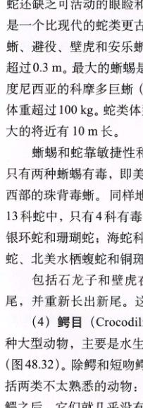
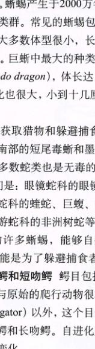
图 48.31 有鳞目的代表 (a) 一种澳洲石龙子。(b) 一种光滑青蛇 (Liopeltis vernalis)。
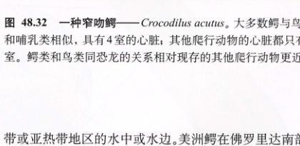
图 48.32 一种窄吻鳄 Crocodilus acutus。大多数鳄与鸟类和哺乳类相似，具有 4 室的心脏；其他爬行动物的心脏都只有 3 室。鳄类和鸟类同恐龙的关系相对现存的其他爬行动物更近。
Page 24 / 原始页码 938
(译者注)。与短吻鳄相似的凯门鳄 (Caiman)，原产于中美。长吻鳄 (gavial) 是一类食鱼的鳄，具有细长而细的吻，仅产于印度和缅甸。
鳄类都是肉食性的，它们一般潜伏起来等待猎物，然后残忍地攻击。它们的身体很好地适应了这种捕食方式：眼位于头顶，鼻孔在口的顶端，这样它们可以潜伏在水里，一边观察，一边呼吸。它们有巨大的口，饰以锋利的牙齿和非常强壮的脖子。口后的一个阀门防止鳄在水下进食时水进入气管。
与其他现存的爬行动物相比，鳄类与鸟类更相似。现存的爬行动物中，鳄类与鸟类相同之处是有保护幼体 (至少是部分恐龙也具有的一个特点) 和具有 4 室心脏。鳄还有很多与现存其他的爬行动物不同的其他的解剖学特点，而与鸟类相似。因此，鸟类实际上是恐龙的直系后裔。鳄和鸟类都与恐龙的亲缘关系很近，因而二者亲缘关系也很近，而它们与蜥蜴和蛇则较远。
48.4.7 鸟类
只有 4 个类群的动物具有了飞翔的能力——昆虫、翼龙、鸟类和蝙蝠。翼龙是能飞翔的爬行动物，由滑翔的爬行动物进化而来，在与恐龙一同灭绝之前，曾经飞行过 1.3 亿年。这些不同的动物挑战飞翔的方法惊人的相似，就像流水从相似的溪谷流下一样，进化也发展出相似的适应。但是，同样也有着显著的差异。鸟类飞翔的成功建立在动物界独一无二的结构——羽毛之上的。羽毛从爬行动物的鳞片演化而来，是对飞行的理想适应。羽毛很轻，而且损坏后很容易更换 (不像翼龙和蝙蝠的皮翼)。现今，鸟类是最成功、种类最多的陆生脊椎动物，有 28 个目，共 166 科，大约 8 800 种 (表 48.4)。
鸟类的主要特征
现代的鸟类无牙，只有发育不全的尾，但它们仍然保留了很多爬行动物的特征。比如说，鸟类产羊膜卵，虽然鸟蛋的壳比爬行动物的革质壳更硬。而且，鸟类的脚和腿的下部长有和爬行动物一样的鳞片。鸟类的独特之处是什么？它们与现存的爬行动物的区别又是什么？
(1) 羽毛 (feather)：羽毛由爬行动物的鳞片进化而来，具有两个功能：飞行的升力和保持热量。羽毛的结构使鸟类具有最大的灵活性和强度以及最小的重量 (图 48.33)。羽毛由皮肤上的小凹陷，即羽囊 (follicle) 产生。
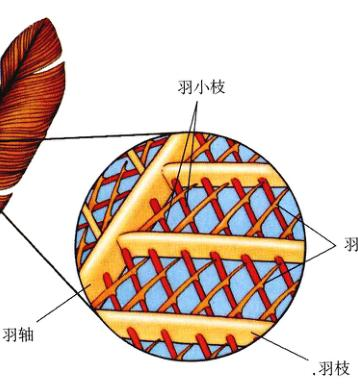
图 48.33 羽毛 这张放大图显示了羽片如何通过微小的羽小枝相连。
Page 25 / 原始页码 939
表 48.4 鸟类主要的目
| 目 |
典型代表 |
图像 |
关键特征 |
现存种类数 |
| 雀形目 |
乌鸦、嘲鸟、知更鸟、麻雀、八哥 |
(Image Placeholder) |
鸣禽，高度发达的发声器官；攀援足；晚成鸟。 |
5 276 |
| 雨燕目 |
蜂鸟、雨燕 |
(Image Placeholder) |
快速的飞行者，短腿，身体小；翅膀振动迅速。 |
428 |
| 鴷目 |
蜜鴷、犀鸟、啄木鸟 |
(Image Placeholder) |
啄木鸟或犀鸟，具抓握足，像凿一样尖锐的喙可以啄碎木头。 |
383 |
| 鹦形目 |
美冠鹦鹉、鹦鹉 |
(Image Placeholder) |
鹦鹉，用大而有力的喙碾碎种子；具有高度发达的发声器官。 |
340 |
| 鸻形目 |
海雀、鸥、矶鹬、燕鸥 |
(Image Placeholder) |
涉禽，像高跷一样的长腿；用于探测的细长的喙。 |
331 |
| 鸽形目 |
鸽、鸠鸽 |
(Image Placeholder) |
鸠鸽，具攀援足、矮胖而结实的身体。 |
303 |
| 隼形目 |
雕、隼、鹰、秃鹫 |
(Image Placeholder) |
猛禽，肉食；视力敏锐；尖锐的喙以撕裂肉；白昼活动。 |
288 |
| 鸡形目 |
鸡、松鸡、雉、鹌鹑 |
(Image Placeholder) |
鸡鹑类飞行能力通常有限；矮胖的身体。 |
268 |
| 鹤形目 |
蹼鸡、鹤、秧鸡 |
(Image Placeholder) |
涉禽，具长而像高跷一样的腿，体型大小不等，栖于沼泽。 |
209 |
| 雁形目 |
鸭、鹅、天鹅 |
(Image Placeholder) |
水禽趾间有蹼，嘴扁，边缘有滤食功能的梳状栉板。 |
150 |
| 鸮形目 |
仓鸮、角鸮 |
(Image Placeholder) |
为夜行捕食的鸟，具强壮的喙、有力的足。 |
146 |
| 鹳形目 |
鹭、鹳、鹮 |
(Image Placeholder) |
涉禽，腿长，体大。 |
114 |
| 鹱形目 |
信天翁、鹱 |
(Image Placeholder) |
海鸟，喙呈管形；可以长时间飞行。 |
104 |
| 企鹅目 |
王企鹅、冠毛企鹅 |
(Image Placeholder) |
企鹅，海生；适应游泳的翼；不能飞；分布限于南半球；保暖的羽毛构成厚皮毛。 |
18 |
| 恐鸟目 |
几维 |
(Image Placeholder) |
几维不能飞，体小型，原始鸟类，只存在于新西兰。 |
2 |
| 鸵形目 |
鸵鸟 |
(Image Placeholder) |
鸵鸟，具有适于奔跑的强健的足，不能飞，只有两趾，体大。 |
1 |
Page 26 / 原始页码 940
典型的飞羽 (flight feather)，羽轴 (shaft) 从囊中生出，成对的羽片 (vane) 从其侧面长出。成熟时，每个羽片具有很多分支，称作羽枝 (barb)。羽枝上又有很多突起，称作羽小枝 (barbule)，上面有许多微小的钩。这些钩将羽枝相互连接起来，使羽毛具有了一个连续的表面和一个结实而有弹性的外形。和鳞片一样，羽毛可以更换。鸟类是所有现存动物中惟一具有羽毛的。最新的化石发现一些恐龙可能具有羽毛的证据。
(2) 飞行的骨架：鸟类骨骼薄且中空。鸟的许多骨愈合起来，因此比爬行动物的骨骼更加坚固。脊椎、肩带与骨盆愈合形成了以个结实的骨架，以附着飞肌。主动飞行的动力来自于巨大的胸肌，胸肌约占一只鸟总重量的 30%。胸肌从翅膀向下延伸至胸骨，胸骨上高高的龙骨突 (keel) 增大了胸肌的附着面。胸肌还附着在愈合的锁骨，即叉骨 (wishbone) 上。其他现存的脊椎动物都不具有愈合的锁骨或有龙骨突的胸骨。
48.4.8 鸟类的进化史
已知最早的鸟类是 1.5 亿年前的始祖鸟 (Archaeopteryx) (图 48.34)，1862 年发现于巴伐利亚的石灰石采石场，其羽毛的痕迹很清楚地印在岩石里。
1) 鸟类是恐龙的后裔
始祖鸟的骨骼与小型兽脚类恐龙有很多相似之处。它和鸟差不了多少，头骨具有牙齿，极少有骨块相互愈合——这是恐龙的特征，而不是鸟类的特征。骨骼是实心的，不像鸟类的骨骼是空心的。而且，它具有一个类似爬行动物的长尾，而没有像现代鸟类那样附着飞行肌的胸骨。另外，它具有没有愈合的前肢。由于它具有羽毛的很多特征，在化石上发现羽毛以前，一些始祖鸟化石最初被认为是腔骨龙 (coelurosaur) 中的美颌龙 (Compsognathus)。美颌龙是一种体型相似的小型兽脚类恐龙。化石上翅膀和尾部的羽毛清楚地表明了始祖鸟是鸟类。它还具有其他与鸟类相似的特征，尤其是叉骨。
然槽齿类 (thecodont) 也具有叉骨，但恐龙却没有。始祖鸟与美颌龙惊人的相似性使得几乎所有古生物学家都接受了始祖鸟是恐龙的直系后裔的观点——实际上，现今的鸟类就是“有羽毛的恐龙”。一些学者甚至轻率地说在感恩节晚餐上“切开恐龙”。在中国最新发现的带羽毛的恐龙很有力地支持了这个推论。例如，尾羽龙 (Caudipteryx) 是明显具有羽毛的恐龙。尾羽龙属于兽脚类，其尾部和前肢具有大型的羽毛，但也有许多疾走龙 (velociraptor) 的特征 (图 48.35)。由于尾羽龙的前肢太短，不能作为翼，故而也没有进化出鸟类特有的飞行的羽毛。相反，羽毛可能像哺乳动物的皮毛一样是用于保暖。某些恐龙的前肢加长后才获得了飞行的功能，我们称这些恐龙为鸟。
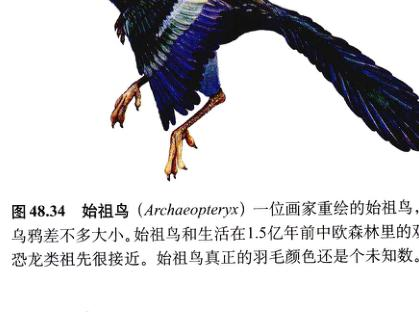
图 48.34 始祖鸟 (Archaeopteryx) 一位画家重绘的始祖鸟，和乌鸦差不多大小。始祖鸟和生活在 1.5 亿年前中欧森林里的双足恐龙类祖先很接近。始祖鸟真正的羽毛颜色还是个未知数。
Page 27 / 原始页码 941
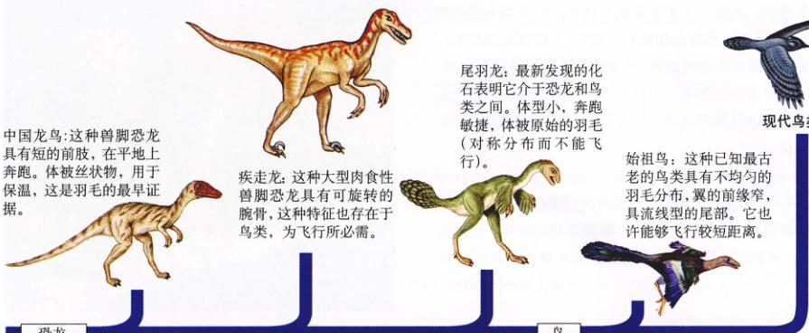
图 48.35 鸟类进化的途径 几乎所有的古生物学家现在都接受了鸟类是兽脚类恐龙的直系后裔这一理论。从中国龙（疾走龙，奔跑）-> 尾羽龙（具有羽毛）-> 始祖鸟（飞行）-> 现代鸟类。
尽管鸟类与恐龙关系很密切，生物学家仍将其列为独立的鸟纲，因为鸟类具有几个很重要的特征：羽毛，中空的骨，一些生理机制，比如说功能极强的肺可以持续续地飞行。由于其独特的适应性和种类繁多，鸟类被单独列为一纲。这个事实原本是分类反映了大多数生物学家所接受的基本事实，即鸟类是兽脚类恐龙的直系后裔，它们和其他兽脚类与腔骨龙的关系一样密切 (图 48.35)。
在白垩纪早期，始祖鸟之后的仅仅几百万年，便产生了种类很多的鸟类，它们具有很多现代鸟类的特征。近几年在蒙古、西班牙和中国发现的化石揭示出一大群有牙齿、骨中空、可以负担持续飞行的胸骨的种类。还有一些化石显示出高度特化的、不能飞的潜水鸟类。这些各种各样的鸟类在白垩纪的 7000 万年中与翼龙共同飞翔在天空中。
由于化石很少能完整记录羽毛的印记，而且现代鸟类的骨骼中空且易损，鸟类的化石记录很不完整。166 科现代鸟类之间的亲缘关系主要通过比较 DNA 的相似性推断出来。这些研究认为，最古老的现存鸟类是不能飞的鸟类，如鸵鸟。再往后，雁形目在白垩纪早期产生，然后是一个大的类群，包括鸮形目、鹦形目、雨燕目和鴷形目出现。鸟类中最大的目——雀形目，或鸣禽 (包括今天鸟类种类的 60%)，产生于白垩纪中期。鸟类中最特化的，如鸽形目、隼形目、鹳形目、企鹅目，直到白垩纪晚期才出现。人们认为，除了少数现代的无齿鸟类外，在 6500 万年前翼龙和恐龙灭绝之前的白垩纪末期，鸟类的绝大多数的类群就已经产生了。
2) 现存的鸟类
观察鸟类的喙和足你便可以获得关于它的生境和食物的很多信息。比如说，肉食性的鸟类，如鸮，具有弯曲的爪以捕捉猎物，还有尖锐的喙将食物撕碎。鸭的喙很平，可以用来铲泥，而雀类的喙短而用来弄碎种子。鸟类共 28 目，其中最大的目包括 5 000 多种 (图 48.36)。
鸟类具有许多适应性特征以解决飞行高代谢所需的巨大能量：
(1) 高效的呼吸系统：主动飞翔时，飞行肌要消耗大量的氧气。爬行动物的肺仅有有限的表面积，远不能满足自身对氧气的需要。哺乳动物的肺有很大的表面积，而鸟类肺的结构发生了一个根本的改变以满足这个挑战 (详见第 53 章)。当鸟吸气时，空气经过肺进入背部腔和附近的一系列气囊中；呼气时，背部气囊中的空气经过肺到达前气囊再排出。因为空代总是沿同一方向过滤，而且血液流经肺部时恰与气流成直角，所以气体交换的效率很高。
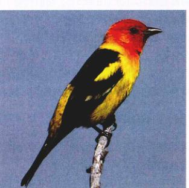
图 48.36 鸟纲 这只黄腹比蓝雀 (Piranga ludoviciana)，隶属于鸟类最大的目——雀形目，该目包含 5000 多种鸟。
Page 28 / 原始页码 942
(2) 高效的循环系统：主动飞行时，新陈代谢同样需要高效的血液循环，以便肺部得到的氧气能够很快地运输到飞行肌。现存的大多数爬行动物，由于心室不完全分隔，所以从肺部来的含氧血和从身体返回的缺氧血在心脏混合。鸟类心室完全分隔为 2 心室，两个血液循环环不相混合，可以飞行肌获得的完全是含氧血。
与爬行动物和其他大多数脊椎动物相比，鸟类的心跳频率很快。蜂鸟的心跳频率大约是每分钟 600 次，运动的美洲山雀是每分钟 1000 次。相反，体型大而无飞翔能力的鸵鸟的心率每分钟只有 70 次，与人类相同。
(3) 内温性 (endothermy)：像哺乳类一样，鸟类是内温性的。许多古生物学家认为鸟类的祖先恐龙也是内温动物。鸟类的体温范围是 40 ~ 42°C (人的体温是 37°C)，明显高于大多数哺乳动物。鸟类的羽毛是很好的隔温层，帮助保存身体的热量。内温性维持的高温使鸟类飞行肌的新陈代谢能够高速进行，为肌肉迅速的收缩提供所需的能量。
48.4.9 哺乳动物
世界上现存哺乳动物约 4100 种，哺乳纲 (Mammalia) 是脊椎动物五个纲中种类最少的一类。大多数陆生的大型脊椎动物都是哺乳动物 (图 48.37)。它们代替了恐龙，成为主宰陆地的类群。当你眺望非洲大草原时，会看见大型的哺乳动物，如狮子、斑马、瞪羚和羚羊等。你可能会注意到与它们生活在同样生境中的许多鸟类、蜥蜴和蛙。不过典型的哺乳动物并不是那么大，4100 种哺乳动物中，3200 种是啮齿类、蝙蝠、鼩鼱或鼹鼠 (表 48.5)。
1) 哺乳动物的主要特征
哺乳动物具有两个独特的特征，完全不同于其他所有的脊椎动物：
(1) 被毛 (hair)：所有哺乳动物体外被毛。即使是皮肤明显裸露的鲸和海豚嘴上也长有毛发。毛发的产生和调节体温的能力使哺乳动物能侵入爬行动物不能生存的寒冷地区。恐龙毁灭时，毛皮的保温性确保了哺乳动物能够生存下来。
与来源于爬行动物鳞片的羽毛不同，哺乳动物的毛是一种完全不同的皮肤结构形式。哺乳动物的毛是富含蛋白质的长细丝，像一根从皮肤下的毛囊 (hair follicle) 中生出的硬线。这根细丝主要由死细胞构成，里面填充了纤维状的角蛋白。
毛最重要的功能是防止热量散失。哺乳动物是内温动物，一般只说，体温总是比环境温度高。许多哺乳动物因被这层浓密的毛而减少了身体热量的散失。毛的另外一个功能是伪装，动物体表的颜色和花纹常与其栖息的环境协调。在棕色落叶层林地中的棕色小老鼠几乎不能被发觉，而具有橙色和黑色条纹的孟加拉虎可以在其捕猎场所——橙棕色的高草中消失。毛还是触觉器官，猫和狗的胡须是非常敏感的触毛。在夜间活动或者穴居生活的哺乳动物经常要依靠它们的胡须判断猎物的位置或避免撞上物体。毛还是防御武器，豪猪和刺猬用长、尖而硬的刚毛 (quill) 来保护自己。
(2) 乳腺 (mammary gland)：所有雌性哺乳动物都具有能够分泌乳汁的乳腺。新生的哺乳动物没有牙齿，吮吸乳汁，幼鲸也靠母乳哺育。乳汁富含脂肪、糖和蛋白质。1 L 人乳中各种物质的含量如下：蛋白质 11 g，脂肪 49 g，糖 70 g (主要是乳糖)，矿物质 2 g (对早期生长极重要，如钙)。奶中 95% 的体积是水，这对于防止脱水至关重要。奶是一种高热量的食品 (人乳的热量为 750 kcal/L)，对于正在快速生长的新生哺乳动物而言，高能量显得非常重要。奶中大约 50% 的能量来源于脂肪。
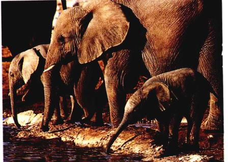
图 48.37 哺乳动物 在水洼旁的非洲象 (长鼻目)。
Page 29 / 原始页码 943
表 48.5 哺乳动物主要的目
| 目 |
典型代表 |
图像 |
主要特征 |
现存种类数 |
| 啮齿目 |
河狸、鼠、耗子、豪猪 |
(Image Placeholder) |
小型植食者，凿状门牙。 |
1814 |
| 翼手目 |
蝙蝠 |
(Image Placeholder) |
飞翔的哺乳动物，主要以果实或昆虫为食，长指，薄翼膜；夜行；靠声纳导航。 |
986 |
| 食虫目 |
鼩鼱、鼹鼠 |
(Image Placeholder) |
小型穴居哺乳动物，捕食昆虫 较原始的有胎盘哺乳类；多数时间栖息于地下。 |
390 |
| 有袋目 |
袋鼠、树袋熊 |
(Image Placeholder) |
有袋哺乳动物，幼体在腹部的育儿袋中发育。 |
280 |
| 食肉目 |
熊、猫、浣熊、鼬、狗 |
(Image Placeholder) |
食肉捕食者，牙齿适于撕碎肉，在澳大利亚没有土著种。 |
240 |
| 灵长目 |
猿、人、狐猴、猴 |
(Image Placeholder) |
树栖者，大脑发达；两眼前视；拇指与其他指相对；是一支很早与其他哺乳动物分开的类群，是进化的终端。 |
233 |
| 偶蹄目 |
牛、鹿、长颈鹿、猪 |
(Image Placeholder) |
有蹄哺乳动物，具有 2 或 4 个趾，绝大多数为草食性动物。 |
211 |
| 鲸目 |
海豚、鲸 |
(Image Placeholder) |
完全海生的哺乳动物，具流线型身体，前肢鳍状，后肢消失；头顶有喷水孔，仅口鼻处有毛。 |
79 |
| 兔形目 |
兔、野兔、鼠兔 |
(Image Placeholder) |
似啮齿类的跳跃者，有 4 个上门齿 (啮齿类只有 2 个可见的上门齿)，后肢一般比前肢长，适于跳跃。 |
69 |
| 鳍脚目 |
海狮、海豹、海象 |
(Image Placeholder) |
海生肉食类，主要以鱼为食；四肢适于游泳。 |
34 |
| 贫齿目 |
食蚁兽、犰狳、树懒 |
(Image Placeholder) |
无齿的食虫动物，大多数无齿，但有些种类具有退化的、钉状的齿。 |
30 |
| 奇蹄目 |
马、犀牛、斑马 |
(Image Placeholder) |
具有 1 或 3 个趾的有蹄哺乳动物、植食动物，门牙适于切草。 |
17 |
| 长鼻目 |
象 |
(Image Placeholder) |
长鼻的食植动物，两个上门齿加长，为现存最大的陆栖动物。 |
2 |
Page 30 / 原始页码 944
48.4.10 哺乳动物的进化史
自恐龙时代开始，哺乳动物就已经广泛分布了，但在恐龙灭绝前，它们从来没有繁盛过。通过化石我们可以了解很多哺乳动物的进化历史。
1) 哺乳动物的起源
在大约 2.2 亿年前的三叠纪中期，最早的哺乳动物从兽孔类产生，这与恐龙从槽齿类产生的时间相同。哺乳动物只是一些小型的、像鼩鼱一样的动物，它们生活在树上以昆虫为食。在恐龙统治时期，哺乳动物只是一个次要的成员。化石显示，这些早期的哺乳动物具有较大的眼，说明它们可能潜伏在夜里。早期哺乳动物只有一块下颌骨。兽孔类几块骨构成的下领显示了下领的进化过程，从爬行动物的几块骨构成的下颌变成了类似哺乳动物类型的下颌。下颌骨后部关节处的两块骨 (关节骨和方骨，译者注) 退化转移到哺乳动物的中耳腔，变成了听小骨，并与中耳中的镫骨形成一个三骨结构。与爬行动物相比，哺乳动物的中耳将声音放大了数倍。
2) 哺乳动物的早期分化
1.55 亿年前恐龙繁盛之时，哺乳动物是一小群食虫性和植食性的动物。那时的哺乳动物只有 5 个目，且化石非常稀少，说明哺乳动物很不丰富。然而，现代的哺乳动物所属的两个类群已经产生。一类为原兽亚纲 (Prototheria)，为最原始的哺乳动物，是兽孔类 (therapsid) 的直系后裔。大多数原兽类个体很小，像现在的鼩鼱。与兽孔类祖先一样，所有的原兽类都是产卵的。单孔类 (monotreme) 鸭嘴兽 (platypus) 和针鼹 (echidna) 是惟一存活至今的原兽亚纲的动物。另一类是真兽亚纲 (Theria)。我们熟悉的所有哺乳动物 (包括人类) 都属于真兽亚纲。真兽类是胎生的 (viviparous) (即直接生出活的幼体)。现存的真兽亚纲动物分为两大类：有袋类 (marsupial) 和 胎盘哺乳动物 (placental mammal)。袋鼠 (kangaroo)、负鼠 (opossum) 和树袋熊 (Koala) 是有袋类。狗、猫、人、马和其他绝大多数哺乳动物是有胎盘类。
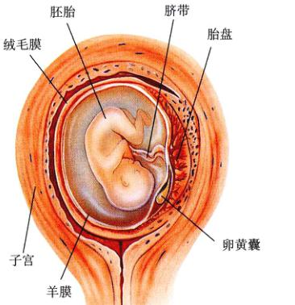
图 48.38 胎盘 胎盘是绝大多数哺乳动物，即胎盘哺乳动物的特征。它由羊膜卵的膜囊演化成脐带。绒毛膜，即羊膜卵最外的一层膜，形成了胎盘本身的大部分。胎盘作为胚胎临时肺、小肠和肾，母体和胎儿的血液不会混合。
3) 哺乳动物时代
在 6500 万年前白垩纪末期，恐龙以及众多的陆生和海生动物都灭绝了，但哺乳动物却幸存下来，有可能是由于它们皮毛的保温作用。在第三纪 (6 500 万 ~ 200 万年前)，哺乳动物迅速多样化，替代了很多恐龙曾占据的生态角色 (表 48.6)。到第三纪晚期，约 1500 万年前，哺乳动物十分繁盛并达到高峰，这时全球大部分地区都属于热带气候。在以后的 1500 万年中，全球气候恶化，热带生境所覆盖的面积减少，导致哺乳动物的总数减少。现存哺乳动物共有 19 个目。
4) 现代哺乳动物的特征
(1) 内温性：哺乳动物是内温性的，哺乳动物之所以能够昼夜都保持活跃，并能够征服从沙漠到冰川等严酷环境，内温性是一个极力重要的适应性因素。许多特化的特征，如隔热作用的皮毛，对于维持恒定体温有重要的作用。此外，具有 4 室心脏提供的更为有效的血液循环，膈肌辅助的更有效的呼吸作用，都使得恒定体温依赖的高效率的新陈代谢成为可能。
(2) 胎盘：大多数哺乳动物种类的幼体在雌性子宫中发育，通过胎盘 (placenta) 滋养，产出活的幼体。胎盘是怀孕母体子宫内的特化器官，使胎儿和母体的血液紧密接触 (图 48.38)。胎儿生长所需的营养、水分和氧气通过母体的胎盘供给，废物也可以通过母体的血液排出。
Page 31 / 原始页码 945
表 48.6 一些灭绝的哺乳动物类群
| 类群 |
典型代表 |
描述 |
| 洞熊 |
(Image Placeholder) |
冰川时期数量很多，这种庞大的素食的熊成群冬眠。 |
| 大角鹿 |
(Image Placeholder) |
不是麋鹿(一种鹿)，大角鹿 (Megaloceros) 是曾经生活过的最大的鹿，角跨距 3.6 m，大约 2500 年前灭绝，现在法国的岩洞壁画中可见。 |
| 猛犸象 |
(Image Placeholder) |
尽管现今幸存只有两种象，但象科的种类在三叠纪晚期远比现在种类多。有很多是适应寒冷生活、身体被毛的猛犸象。 |
| 大地懒 |
(Image Placeholder) |
地懒 (Megatherium)，体长 6 m，重 3 吨，与现代的象差不多大。 |
| 剑齿虎 |
(Image Placeholder) |
这类像狮子一样的猫科动物的下颌可以张到 120 度角，可以将它一对巨大的犬齿插入猎物的身体内。 |
(3) 牙齿：爬行动物具有同形齿 (homodont dentition)，即所有牙齿的形状相同。而哺乳动物具有异形齿 (heterodont dentition)，不同的齿高度特化以适应特殊的饮食习性 (图 48.39)。仅仅通过考查哺乳动物的牙齿就可以判断其食性，以狗 (肉食动物) 和鹿 (植食动物) 的头骨比较为例。狗的长犬齿 (canine tooth) 非常适合于咬持猎物，而它的前臼齿 (premolar tooth) 和臼齿 (molar tooth) 是尖的，用于撕裂大块的肉。相反，鹿无犬齿，而用下颌上的平而凿状的门齿啃口中的植物。鹿的臼齿很大，上面有嵴，可以很方便地磨碎坚硬的植物组织。啮齿类，如海狸 (beaver)，是啃食者，具有长长的门牙 (incisor) 来咀嚼树枝或树干。它们的门牙永远生长，就是说，齿端磨下去，又长出新的以保持原先的长度。
(4) 消化植物：大多数哺乳动物为植食性，主要或全部食用植物。植物细胞壁的主要成分纤维素，构成了植物体的大部分，也是植食性哺乳动物食物的主要来源。纤维素分子具有珍珠项链样的结构，每个珍珠相当子一个葡萄糖分子。哺乳动物没有水解这些葡萄糖分子间化学键的酶，因此不能消化。植食性动物依靠体内共生的具有纤维素水解酶的细菌来水解纤维素，以提供所需要的糖。
一些动物，如牛、水牛、羚羊、山羊、鹿和长颈鹿具有巨大的分 4 室的反刍胃，作为储藏和发酵的器官。第一个室最大，里面有高密度的消化纤维素的细菌。咀嚼过的植物进入这个室，纤维素在这里被细菌水解，其余物质再进入胃的其他部分进一步消化。
啮齿类、马、兔和象利用共生细菌以不同的方式来消化纤维素。它们的胃相对较小，消化植物纤维素的工作就在大肠中进行，与白蚁一样。真正承担消化纤维素工作的是细菌生活在盲肠中。
尽管有这些复杂的消化纤维素的适应性，但植食植物的营养还是远不及一口肉的营养。植食动物必须消耗大量的植物材料才能获得足够的营养。一头象每天需食用 135 ~ 150 kg 植物。
(5) 蹄和角：毛中的蛋白质——角质素 (keratin)，也是构建爪、指甲 (趾甲) 和蹄的物质。蹄 (hoove) 是马、牛、羊、羚羊以及其他奔跑型哺乳动物的脚趾上特化的角质素垫。这种坚硬的角状垫，可保护脚趾并缓冲脚趾受到的冲击。
Page 32 / 原始页码 946
牛和羊的角 (horn) 由骨质核心外面套以角质鞘构成。这个骨质核心与头骨相连，不会脱落 (称为洞角，译者注)。我们看到的角只是其外鞘，它由头发状的角质素纤维压缩成一种非常坚硬的结构。鹿角 (antler) 不是由角质素构成，而是由骨构成。雄鹿的角每年脱换一次，夏季生长时，鹿角被一薄层称作鹿茸 (velvet) 的皮肤覆盖。第三种角是犀牛角，完全由角质素纤维构成，没有骨质核心。
(6) 飞翔的哺乳动物：蝙蝠是惟一能够主动飞翔的哺乳动物 (图 48.40)。与鸟类的一样，蝙蝠的翼也是特化的前肢。蝙蝠的翼是由皮肤和肌肉构成的革质膜，在四个指骨间张开。膜的边缘与身体侧面和后肢相连。静止时，大多数蝙蝠喜欢倒挂栖息。蝙蝠是哺乳动物的第二大目，仅次于啮齿类。它们获得这种重大成功的原因是，很多种类能够利用鸟类没有利用的食物资源——夜行性昆虫。
晚上蝙蝠是靠什么导航的？18 世纪晚期，意大利生物学家 Spallanzani 发现，一只被弄瞎的蝙蝠在飞行时仍旧能捕获到昆虫，且不会撞到别的东西。显然，除了视觉器官外，蝙蝠在暗处用其他的感官定位。当 Spallanzani 堵住了蝙蝠的耳，它便不能定位了，并与物体相撞。Spallanzani 的结论是，蝙蝠在夜间能够靠听觉认知路。现在我们知道，蝙蝠发展了一套声纳 (sonar) 系统，功能很像船舶和潜艇探测水下物体时所用的声纳装置。蝙蝠在飞行中连续不断地发出高频声波 (超声波)，其频率超出人耳能够听见的范围。这种超声波从口中或鼻子中发出，声波遇到障碍物或飞行的昆虫后反射回来，蝙蝠便听到了回声。经过对蝙蝠脑的精细处理后，蝙蝠便能判断物体的方向和距离了。
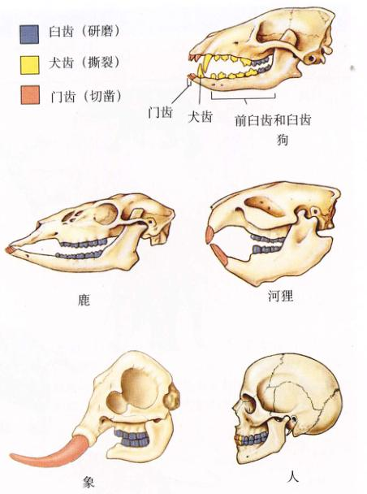
图 48.39 哺乳动物具有不同类型的特化的牙齿 爬行动物都具有同形齿，而哺乳动物具有异形齿，以适应不同的食性。肉食动物，如狗，具有能够撕裂食物的大齿；狗的一些前臼齿和臼齿也用来撕扯。草食动物，如鹿，具有门齿切碎植物，臼齿用于研磨植物。海狸的凿形门齿为凿主。象的门牙特化为武器，臼齿磨碎植物。人为杂食动物，具有犬齿、门齿和臼齿。
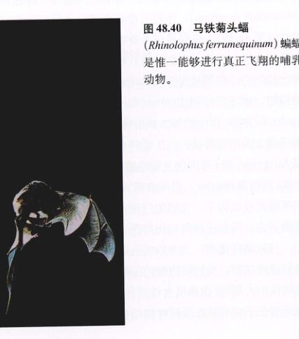
图 48.40 马铁菊头蝠 (Rhinolophus ferrumequinum) 蝙蝠是惟一能够进行真正飞翔的哺乳动物。
Page 33 / 原始页码 947
5) 哺乳动物的分类
哺乳动物有 19 个目。其中 17 个 (包括 94% 的种类) 是胎盘类。另外两类是原始的单孔类和有袋类。
(1) 单孔类 (Monotreme)：卵生哺乳动物。鸭嘴兽和两种针鼹是现存的单孔类动物 (图 48.41a)。在现存的哺乳动物中，只有单孔类产有壳的卵。它们的肩带和骨盆不像现存的其他哺乳类，而更像早期的爬行类。与爬行动物一样，单孔类具有一个泄殖腔，是粪便、尿和生殖产物的共同出口。单孔类比其他现存哺乳动物更接近早期的哺乳动物。
除了具有许多爬行动物的特征以外，单孔类也具有哺乳动物的特征——毛皮和乳腺。幼兽从卵中孵出后饮母兽的乳汁。雌性没有发达的乳头，所以幼兽不能吮吸，母兽腹部乳腺分泌的乳汁渗到体毛上，幼兽用舌头舔舐。
仅发现于澳大利亚的鸭嘴兽，大多数时间生活在水边，水性很好。喙的用途像鸭子，在泥里翻找蠕虫和其他软体动物。在澳大利亚和新几内亚的针鼹具有强壮而尖锐的爪，用于挖掘。针鼹用它的尖嘴寻找昆虫，尤其是蚂蚁和白蚁。
(2) 有袋类 (Marsupial)：有袋类 (图 48.41b) 和其他哺乳动物的主要区别在于其胚胎发育的方式。有袋类的受精卵被绒毛膜和羊膜包围，但不像单孔类的卵那样有壳。在早期发育的大部分时间里，有袋类的胚胎被卵内丰富的卵黄所滋养。在即将出生之前，绒毛膜形成一个短命的胎盘。不久以后，一般是受精后的八天之内，生出很小的无毛的幼胎。幼胎尚未充分发育，爬进育儿袋，用唇紧裹母体乳头，并继续发育。
大约 1 亿年前出现有袋类，稍早于胎盘类哺乳动物。现今，大多数有袋类生活在历史上曾被隔离的澳大利亚和南美大陆。澳大利亚和新几内亚的有袋类多样化发展，占据了胎盘哺乳动物在世界其他地方所占领的生态位。比如，袋鼠是澳大利亚的草食者，扮演了其他地方羚羊、马和水牛的角色。现在澳大利亚和新几内亚的胎盘类哺乳动物，都是最近迁入的，包括被称为土著的人某引入的狗 (译者注) 以及后来的欧洲移民引入的哺乳动物。在北美发现的惟一一种有袋类动物是弗吉尼亚负鼠 (Virginian opossum)。
(3) 胎盘类哺乳动物 (placental mammal) (图 48.41c)：也称真兽亚纲。胎盘类哺乳动物的特征是具有胎盘，在动物的整个胚胎发育时期，胎盘为胚胎提供营养。现存的大多数哺乳动物都属于这一类。现存哺乳动物有 19 个目，胎盘类占了 17 个目。这是一个种类繁多的类群，小到 1.5 g 的鼩鼱，大到 100 t 重的鲸。
胎盘类哺乳动物在胚胎发育过程的早期就产生了胎盘。在胎盘中，胎儿和母体的血管都很丰富，物质可以在母体和胎儿的血液间有效地交换。胎盘是由胎儿的绒毛膜和尿囊，与母体子宫壁的内膜共同组成的，子宫是胎儿发育的场所。与有袋类不同，胎盘类哺乳动物的幼体在出生之前要经历一个相当长的发育时期。
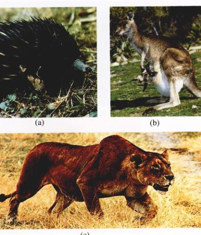
图 48.41 三类哺乳动物 (a) 澳洲针鼹 (Tachyglossus aculeatus)，是单孔类。(b) 有袋类包括袋鼠，一只成年袋鼠的育儿袋中有幼仔。(c) 食肉目 (Carnivora) 的雌性非洲狮 (Panthera leo)，是胎盘哺乳动物。
Page 34 / 原始页码 948
小 结
48.1 肌肉与内部骨架相连，大大提高了运动能力
- 脊索动物的特征是，至少在发育的早期具有背神经管、脊索、咽鳃裂和肛后尾。脊椎动物的骨质内骨骼为骨骼肌提供了附着部位。
48.2 无脊椎的脊索动物具有脊索，但没有脊椎
- 被囊动物和文昌鱼似乎展现了古代的脊索动物的进化分支。
48.3 脊椎动物具有内部骨架
- 脊椎动物与其他脊索动物的差异在于它们具有脊柱，有一个明显高度特化的头和骨质的骨骼。
48.4 脊椎动物在进化过程中侵入了海洋、陆地和天空
- 无颌类与其他脊椎动物不同，缺乏颌。
- 有颌鱼类是活跃的游泳者，主宰了所有淡水和海水水域。
- 最初的陆生脊椎动物是两栖动物。两栖动物依赖水，在潮湿处产卵。
- 爬行动物是最早完全适应陆地生活的脊椎动物。鳞片和羊膜卵体现了对陆地干燥条件的适应。
- 鸟类和哺乳动物由爬行动物演化而来，现在是陆地占优势地位的类群。这两个纲的成员具有内温性，能够控制自己的体温，其优越性存在于随环境温度改变界外条件改变。
- 现存的哺乳动物分为三个主要类群：①单孔类，或卵生哺乳动物，只包括针鼹和鸭嘴兽；②有袋类，幼体在胚胎发育的早期阶段就出生，在育儿袋中继续发育；③胎盘类哺乳动物，不具有育儿袋，用母乳哺育幼体。
问 题
- 脊索动物的 4 个基本特征是什么？
- 脊索动物的三个亚门是什么？每个亚门举出一例。
- 脊索和脊椎动物的脊柱是什么关系？
- 具有颌的动物有什么优势？颌由什么结构进化而来？
- 硬骨同软骨相比，有什么有利之处？
- 鱼的侧线系统是什么？它如何起作用？
- 两栖动物成功登陆涉及到五个方面的革新，分别是是什么？各有什么重要性？
- 包裹在卵中的胚胎如何吸收养分并排出废物？
- 羽毛源自爬行动物的什么结构？
- 两栖动物、爬行动物和哺乳动物的足有什么区别？
- 如何区分猫和狗？
媒体资源
- 脊索动物
- 技能测验：脊索动物的特征
- 脊椎动物介绍
- 鱼类的进化
- 鱼
- 两栖动物
- 爬行动物
- 鸟类
- 哺乳动物
- 拓展章节：恐龙
- “科学”专栏：恐龙的心脏、感恩节午餐上的恐龙、有羽毛的恐龙
- 学生研究：滨蛙的系统发生、比目鱼的变态
- 技能测验：鱼类的进化、颌的进化、爬行类的羊膜卵、爬行类和鱼类循环系统的比较、胎盘